期末备考全面复习指南
一、考试概况与题型分析
小测1 试卷结构（总分50分）
| 题型 | 分值 | 题量 | 考察特点 |
|---|
| 选择题 | 10分 | 10题 | 概念辨析、判断推理 |
| 填空题 | 10分 | ~10空 | 公式应用、计算结果 |
| 计算题 | 22分 | 3题 | 完整计算过程 |
| 实验设计题 | 8分 | 1题 | 方案设计、指示剂选择 |
小测2 试卷结构（总分50分）
| 题型 | 分值 | 题量 | 考察特点 |
|---|
| 选择题 | 10分 | 10题 | 配位/氧化还原/沉淀/光度概念 |
| 填空题 | 10分 | ~7空 | 条件常数、电位、Beer定律 |
| 计算题 | 22分 | 5题 | EDTA滴定、氧化还原、重量分析 |
| 实验设计题 | 8分 | 1题 | 混合离子分别测定方案 |
期末推测：总分100分，范围覆盖 Ch1-Ch10 全部章节。预计选择20题(20分)+填空(20分)+计算5题(50分)+实验设计(10分)。计算题比重最大，重点在 Ch5+Ch6+Ch7。
时间分配建议（100分/120分钟）
- 选择题：20分钟（每题1分钟，不纠结）
- 填空题：15分钟（注意有效数字和单位）
- 计算题：65分钟（按分值分配，大题20分钟）
- 实验设计题：10分钟（原理+步骤+指示剂+公式）
- 检查：10分钟（重点检查有效数字和正负号）
二、各章考频与重要性排序
| 章节 | 重要性 | 常见题型 | 备考建议 |
|---|
| Ch5 酸碱滴定 |
最高 |
选择、填空、计算、实验设计 |
全面掌握，计算必考 |
| Ch3 误差与数据处理 |
高 |
选择、填空、计算 |
t/F/Q检验务必掌握 |
| Ch6 配位滴定 |
中高 |
计算、选择 |
条件稳定常数、pH控制、掩蔽 |
| Ch7 氧化还原滴定 |
中高 |
计算、选择 |
条件电位、KMnO4/K2Cr2O7/碘量法 |
| Ch9 重量/沉淀滴定 |
中 |
选择、填空、计算 |
三种银量法对比、换算因子、沉淀条件 |
| Ch10 吸光光度法 |
中 |
选择、计算 |
Beer定律、示差法、络合物组成测定 |
| Ch1 概述 |
基础 |
选择、填空 |
概念为主，快速过 |
核心规律：酸碱滴定（Ch5）占比最大，几乎每种题型都会涉及。误差统计（Ch3）紧随其后。配位(Ch6)和氧化还原(Ch7)属于"第二梯队"，但计算题必出。重量/沉淀(Ch9)和光度(Ch10)概念+中等计算为主。
三、第一章 定量分析概述
分析方法分类 基础
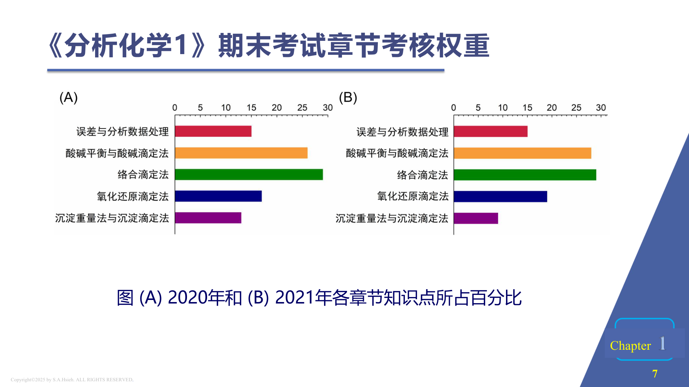
PPT：分析方法分类总览
| 分类依据 | 类型 | 说明 |
|---|
| 任务 | 定性分析 | 鉴定物质组成（是什么） |
| 定量分析 | 测定各组分含量（有多少） |
| 结构分析 | 确定分子结构 |
| 方法 | 化学分析 | 重量法、滴定法（常量组分 >1%） |
| 仪器分析 | 光谱、电化学、色谱（微量组分） |
| 生物分析 | 免疫分析等 |
| 取样量 | 常量分析 | 试样 >0.1 g，溶液 >10 mL |
| 半微量 | 0.01~0.1 g，1~10 mL |
| 微量 | 0.1~10 mg，0.01~1 mL |
| 超微量 | <0.1 mg，<0.01 mL |
基准物质与标准溶液 高频
PPT：基准物质的条件
基准物质必须满足的条件：
- 纯度足够高（99.9% 以上）
- 组成与化学式完全符合（不含结晶水变化）
- 性质稳定（不吸湿、不与CO$_2$/O$_2$反应）
- 参加反应时按反应式定量进行，无副反应
- 摩尔质量较大（减小称量相对误差）
常见基准物质：
Na$_2$CO$_3$（标定HCl）、邻苯二甲酸氢钾（标定NaOH）、Na$_2$C$_2$O$_4$（标定KMnO$_4$）、K$_2$Cr$_2$O$_7$（标定Na$_2$S$_2$O$_3$）、纯Zn/CaCO$_3$（标定EDTA）
滴定方式分类 高频
PPT：滴定方式分类
| 滴定方式 | 操作 | 适用情况 |
|---|
| 直接滴定 | 标准液直接滴定被测物 | 反应快、完全、有合适指示剂 |
| 返滴定（回滴定） | 加过量标准液→用另一标准液回滴 | 反应慢（如Al³⁺+EDTA）或无合适指示剂 |
| 置换滴定 | 先发生置换反应→再滴定产物 | 无法直接/返滴定 |
| 间接滴定 | 被测物通过化学反应转化→滴定 | 被测物不直接参与滴定反应 |
滴定反应必须满足的条件 高频
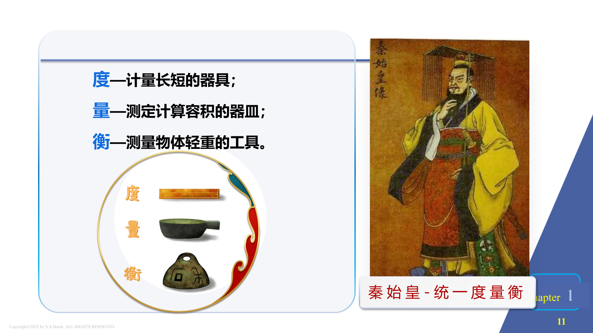
PPT：滴定反应条件
- 反应必须定量完成（完成度 ≥ 99.9%，即 $K \geq 10^6$）
- 反应速度要快（必要时可加热或加催化剂）
- 无副反应（按化学计量关系进行）
- 有合适方法确定终点（指示剂、仪器等）
标准溶液的配制 高频
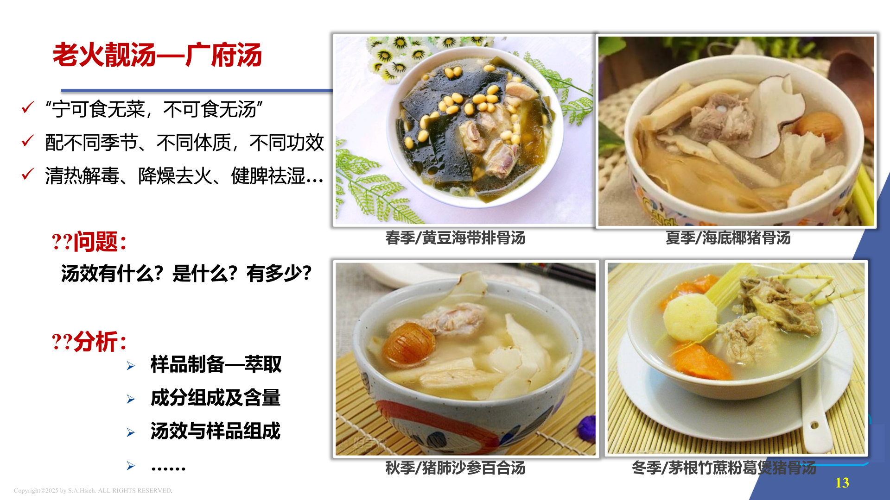
PPT：标准溶液配制方法
| 方法 | 操作 | 条件 | 例子 |
|---|
| 直接配制法 | 准确称量基准物→溶解→定容 | 物质必须是基准物 | K₂Cr₂O₇、Na₂CO₃ |
| 间接配制法（标定） | 粗配→用基准物或已知标准液标定 | 物质不是基准物 | NaOH、HCl、KMnO₄、Na₂S₂O₃ |
NaOH 不能直接配制：易吸收 CO₂ 和水，纯度不确定。KMnO₄ 不能直接配制：含 MnO₂ 杂质。
滴定分析基本计算 必考
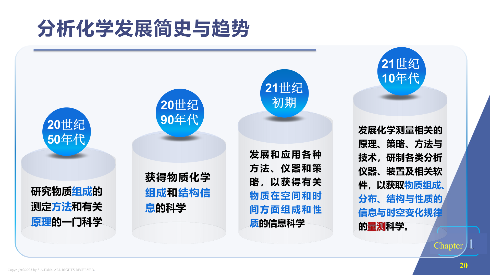
PPT：滴定分析计算
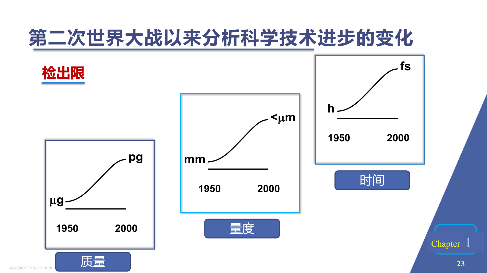
PPT：滴定计算示例
核心公式：
$$n(\text{滴定剂}) \times \text{化学计量比} = n(\text{被测物})$$
$$c_1 V_1 = c_2 V_2 \times \frac{n_1}{n_2}$$
质量分数：
$$w = \frac{c \cdot V \cdot M_{\text{被测物}} \times \text{化学计量比}}{m_{\text{样品}}} \times 100\%$$
滴定度 $T$：
$$T_{\text{A/B}} = \frac{m_A}{V_B} \quad (\text{g/mL})$$
注意：V 的单位必须统一为 L 或 mL，摩尔质量用 g/mol。计算中保留足够中间位数，最终结果按有效数字规则修约。
例题：称取纯 Na₂CO₃ 0.2120g 溶解，用 HCl 标准溶液滴定至甲基橙终点，消耗 20.00 mL。求 HCl 浓度。
Na₂CO₃ + 2HCl → 2NaCl + H₂O + CO₂
$n$(Na₂CO₃)$=0.2120/106.0=2.000\times10^{-3}$ mol
$n$(HCl)$=2\times2.000\times10^{-3}=4.000\times10^{-3}$ mol
$c$(HCl)$=4.000\times10^{-3}/0.02000=\boxed{0.2000}$ mol/L
被测组分含量范围分类 基础
| 含量范围 | 名称 | 常用方法 |
|---|
| >1% | 常量组分 | 滴定分析、重量分析 |
| 0.01%~1% | 微量组分 | 仪器分析（光度法等） |
| <0.01% | 痕量组分 | 高灵敏仪器分析 |
四、第三章 误差与分析数据处理
误差的分类与特征 必考
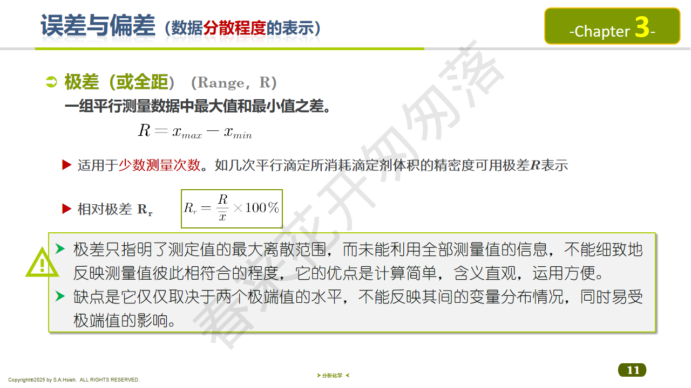
PPT：误差分类
| 特征 | 系统误差 | 随机误差 |
|---|
| 方向 | 单向（恒定或有规律变化） | 双向（时大时小，时正时负） |
| 规律 | 重复测量时重复出现 | 服从正态分布 |
| 消除 | 对照实验、空白实验、仪器校正 | 增加平行实验次数（取平均） |
| 影响 | 影响准确度 | 影响精密度 |
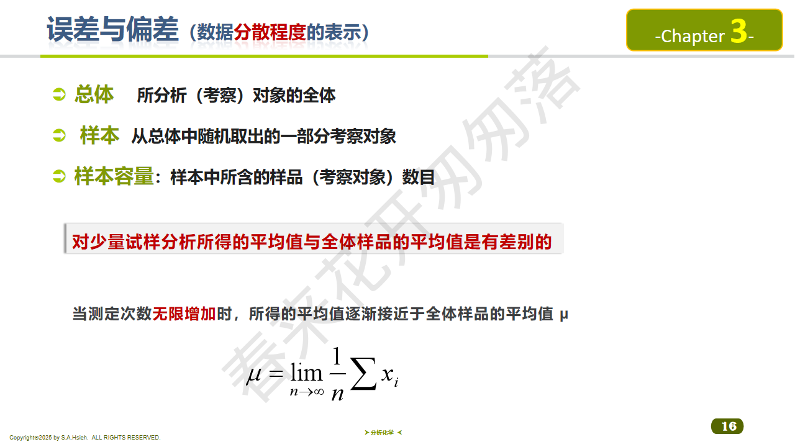
PPT：系统误差的来源
系统误差三大来源：
① 方法误差：终点与计量点不重合、反应不完全、副反应干扰
② 仪器误差：砝码磨损、滴定管不准、容量瓶未校正
③ 操作误差：对指示剂颜色判断偏差（注意：这是个人的恒定偏差，属系统误差）
消除方法：对照实验（用标准试样检验）、空白实验（扣除试剂本底）、仪器校正、更换方法
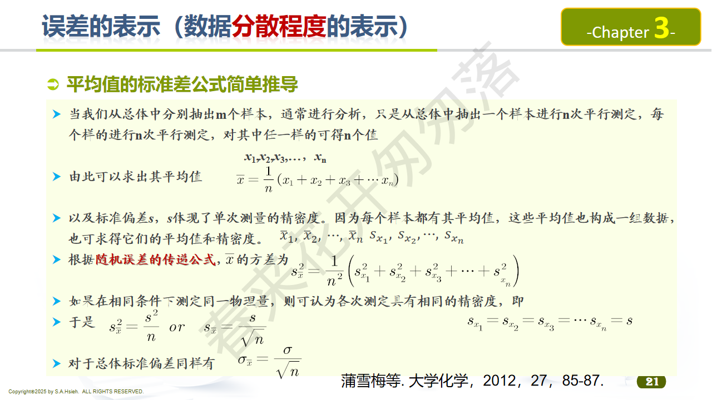
PPT：随机误差的统计特征
随机误差四大特征（正态分布）：
- 对称性：正负误差出现概率相等
- 单峰性：小误差出现概率大于大误差
- 有界性：大误差出现概率趋近于零
- 抵偿性：无限多次测量，随机误差的平均值趋于零
易混点：「读数时最后一位估测不准」→ 随机误差（不是系统误差！每次估读偏高偏低是随机的）
过失误差（粗大误差）：操作失误（如加错试剂、读数看错）→ 不遵循正态分布 → 应用 Q/Grubbs 检验剔除
准确度与精密度 必考
| 准确度 (Accuracy) | 精密度 (Precision) |
|---|
| 衡量 | 测定值与真值的接近程度 | 多次测定值之间的一致程度 |
| 表示 | 误差（绝对/相对） | 偏差（标准偏差 $s$、RSD） |
| 影响因素 | 系统误差 | 随机误差 |
四种组合：
- 精密度好 + 准确度好 → 理想结果 ✓
- 精密度好 + 准确度差 → 存在系统误差
- 精密度差 + 准确度好 → 偶然巧合，不可靠
- 精密度差 + 准确度差 → 最差情况
关系：精密度是准确度的前提条件，但精密度好不保证准确度好（可能有系统误差）。
有效数字规则 必考
基本规则：
- 从第一个非零数字起计数：0.0025 → 2位；25.00 → 4位
- 末尾的零有效：1.00 → 3位；100.0 → 4位
- "1000"有歧义 → 用科学计数法：$1.0 \times 10^3$（2位）
- pH、pKa 等对数值：有效数字只看小数部分！
运算规则：
- 加减法：结果小数位数与参与运算数中小数位数最少的相同
- 乘除法：结果有效数字位数与参与运算数中有效数字最少的相同
修约规则（四舍六入五成双）：
- ≤4 舍去，≥6 进位
- =5 时看5后面：5后有非零数字 → 进位；5后全零或无 → 看5前面，奇进偶不进
典型例题：
• pH = 11.05 → 2位有效数字（小数部分 .05）
• pKa = 4.74 → 2位有效数字
• $[\text{H}^+] = 10^{-11.01} = 9.8 \times 10^{-12}$ mol/L（保留2位）
• 2.345 → 2.34（4偶不进）；2.335 → 2.34（3奇进位）；2.3451 → 2.35（5后有1，进位）
正态分布与 t 分布 高频
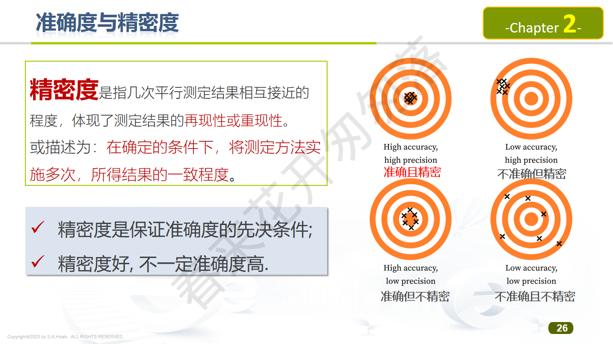
PPT：正态分布
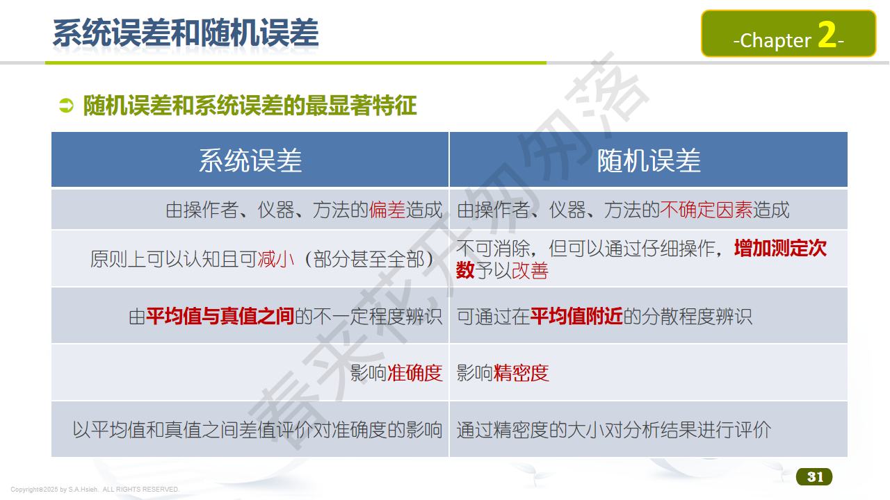
PPT：正态分布区间概率
正态分布区间概率：
| 区间 | 概率 | 单侧概率 |
|---|
| $\mu \pm 1\sigma$ | 68.27% | $P(0\sim1\sigma)=34.13\%$ |
| $\mu \pm 1.96\sigma$ | 95.00% | $P(0\sim1.96\sigma)=47.50\%$ |
| $\mu \pm 2\sigma$ | 95.45% | $P(0\sim2\sigma)=47.73\%$ |
| $\mu \pm 3\sigma$ | 99.73% | $P(0\sim3\sigma)=49.87\%$ |
PPT例题：某分析方法 $\mu=56.22\%$，$\sigma=0.38\%$。求测定值落在 $\mu-1.0\sigma$ 到 $\mu+0.5\sigma$ 范围的概率
$P = P(0\sim1.0\sigma) + P(0\sim0.5\sigma) = 34.13\% + 19.15\% = 53.28\%$
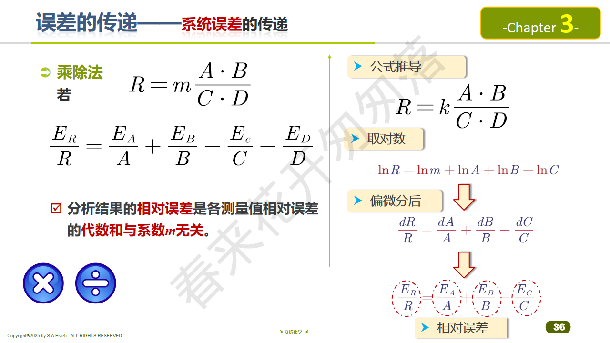
PPT：t 分布（小样本统计）
t 分布 vs 正态分布：
- 用样本标准偏差 $s$ 代替总体 $\sigma$ → 引入不确定性 → t 分布
- 自由度 $f$ 越小 → 曲线越矮胖（尾部更厚）→ 同置信度需更大 $t$ 值
- $f \to \infty$ 时 $t$ 分布趋近正态分布
置信区间 必考
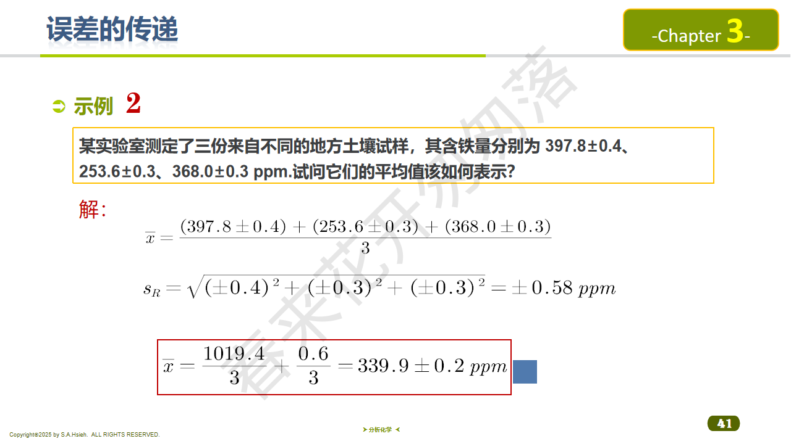
PPT：置信区间
$$\mu = \bar{x} \pm \frac{t_{(\alpha, f)} \cdot s}{\sqrt{n}}$$
- $f = n - 1$（自由度）
- $\alpha$：显著性水平，常用 0.05
- 含义：有 $(1-\alpha)\times 100\%$ 的把握，真值落在此区间内
常用 t 值速查：
$t_{0.05, 3} = 3.182$，$t_{0.05, 4} = 2.776$，$t_{0.05, 5} = 2.571$，$t_{0.05, 9} = 2.262$，$t_{0.05, 19} = 2.093$
统计检验三步法：Q → F → t 必考
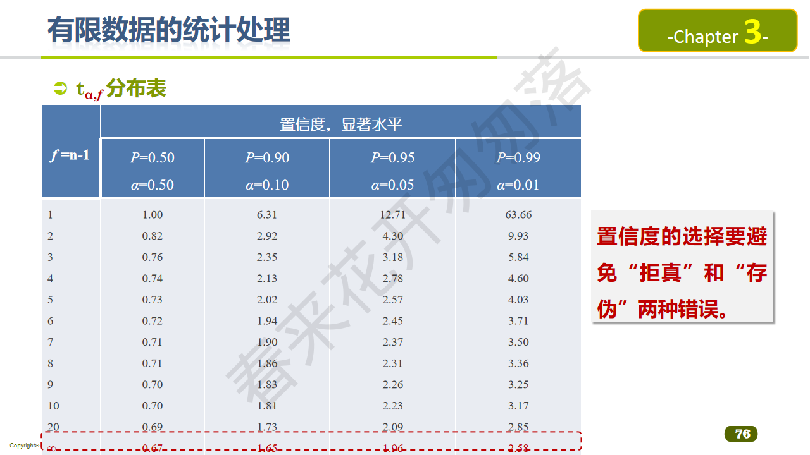
PPT：Q 检验
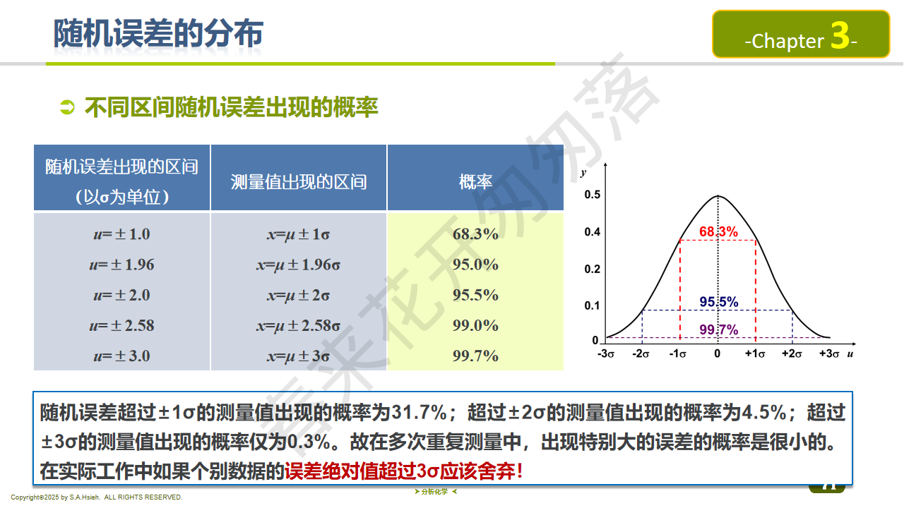
PPT：Q 检验临界值表
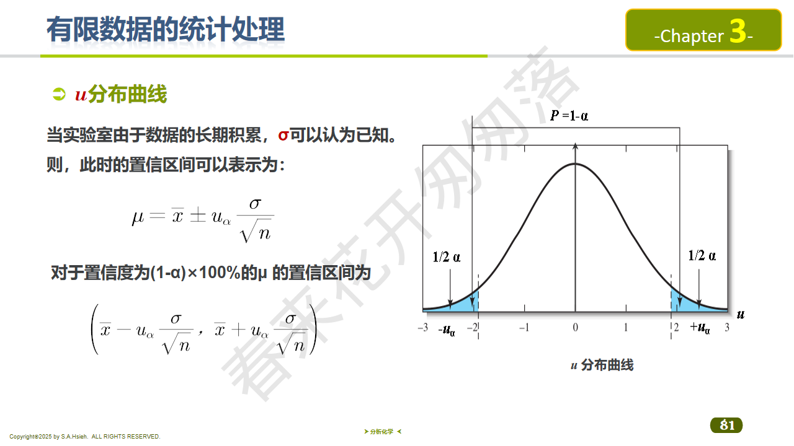
PPT：Grubbs 检验
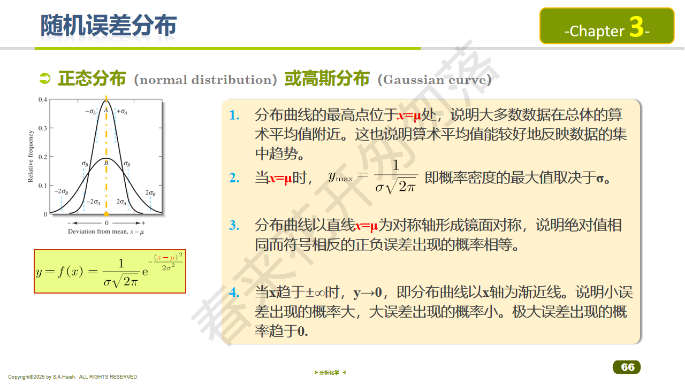
PPT：F 检验
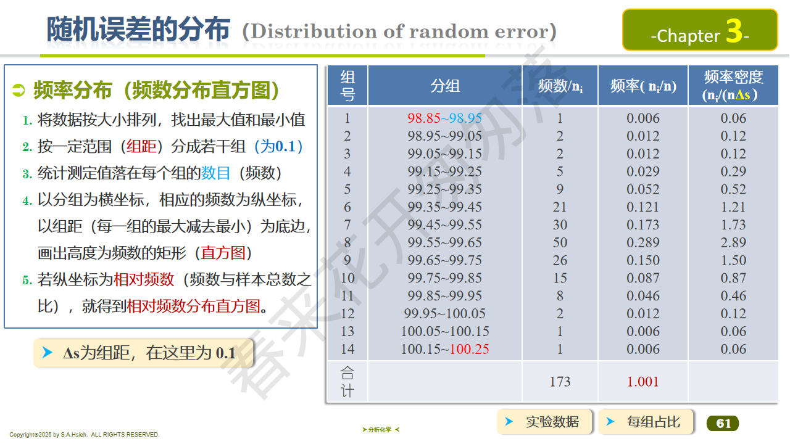
PPT：F 检验例题
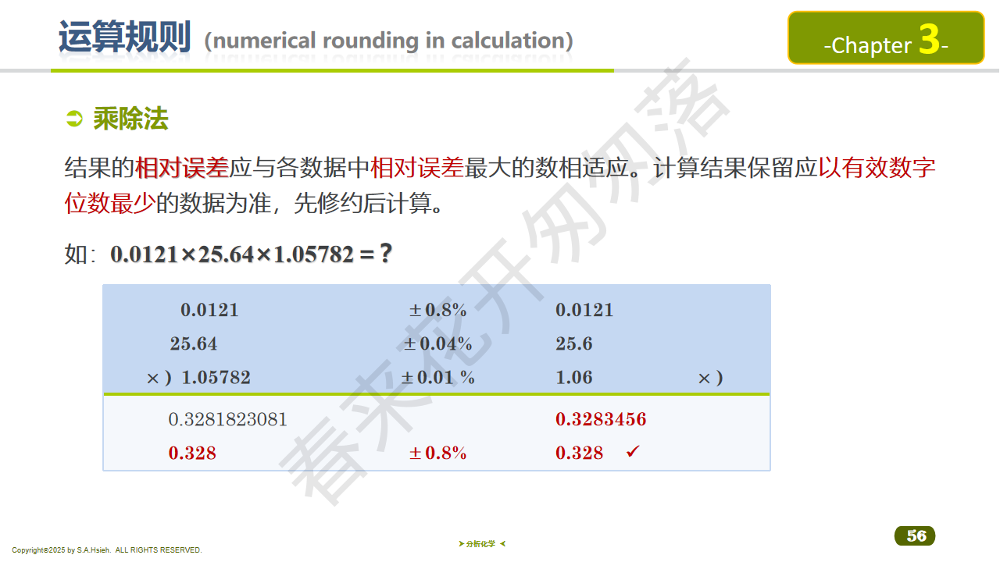
PPT：t 检验
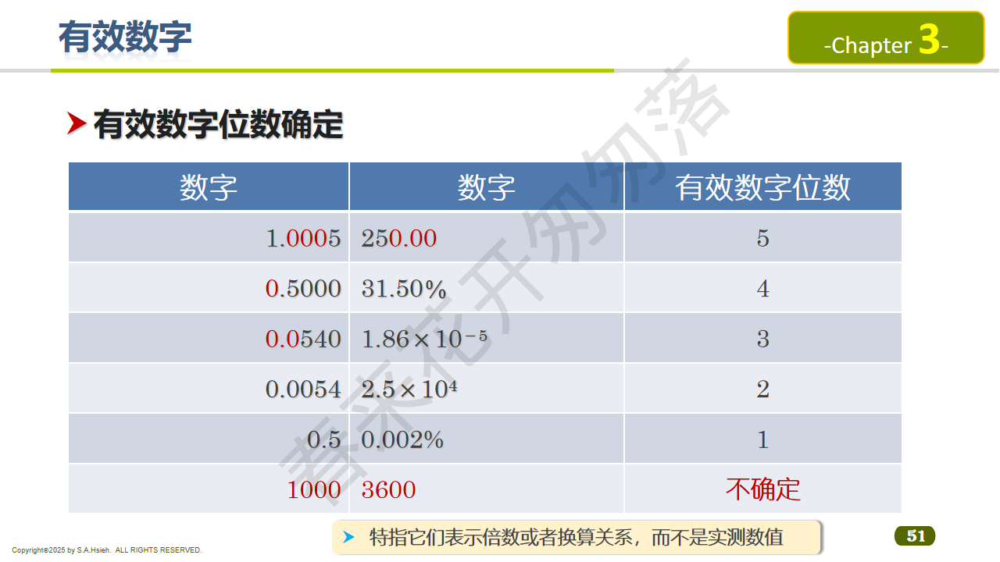
PPT：配对 t 检验
Step 1 — Q 检验（剔除离群值）：
$$Q = \frac{|x_{\text{可疑}} - x_{\text{邻近}}|}{x_{\max} - x_{\min}}$$
若 $Q_{\text{计}} > Q_{\text{表}}$，剔除；否则保留。
Step 2 — F 检验（比较两组精密度）：
$$F = \frac{s_1^2}{s_2^2} \quad (s_1 > s_2)$$
若 $F_{\text{计}} > F_{\text{表}}$，两组精密度有显著差异 → 不能合并数据。
Step 3 — t 检验（比较准确度）：
① 样本均值 vs 标准值：
$$t = \frac{|\bar{x} - \mu_0|}{s} \sqrt{n}$$
② 两组样本均值比较（F 检验通过后用合并标准偏差）：
$$s_{\text{合}} = \sqrt{\frac{(n_1-1)s_1^2 + (n_2-1)s_2^2}{n_1+n_2-2}}, \quad t = \frac{|\bar{x}_1 - \bar{x}_2|}{s_{\text{合}}} \sqrt{\frac{n_1 n_2}{n_1+n_2}}$$
顺序不能反！先 Q（清洗）→ 再 F（比精密度）→ 最后 t（比准确度）。含离群值做 t 检验会得错误结论。
完整统计检验例题（PPT典型流程）：
甲法6次测定：$\bar{x}_1=54.26\%$，$s_1=0.041\%$；乙法5次测定：$\bar{x}_2=54.10\%$，$s_2=0.032\%$
Step 1(Q)：先对各组数据分别做 Q 检验（略），假设无离群值
Step 2(F)：$F=s_1^2/s_2^2=0.041^2/0.032^2=1.64$，$F_{0.05}(5,4)=6.26$，$1.64<6.26$ → 精密度无显著差异 ✓
Step 3(t)：合并 $s_合=\sqrt{\frac{5\times0.041^2+4\times0.032^2}{6+5-2}}=0.037\%$
$t=\frac{|54.26-54.10|}{0.037}\sqrt{\frac{6\times5}{6+5}}=\frac{0.16}{0.037}\times1.651=7.14$
$t_{0.05,9}=2.262$，$7.14>2.262$ → 两法均值有显著差异
Grubbs 检验（另一种离群值检验法）：
$G = \frac{|x_{\text{可疑}} - \bar{x}|}{s}$，若 $G > G_{\text{表}}$ 则剔除。与 Q 检验目的相同，考试中按题目要求选用。
另有 4d 法（$|x_{\text{可疑}} - \bar{x}| > 4\bar{d}$ 则舍弃），适用于快速判断。
Ch3 核心公式速查
| 公式 | 表达式 | 注意 |
|---|
| 平均值 | $\bar{x}=\frac{1}{n}\sum x_i$ | |
| 标准偏差(样本) | $s=\sqrt{\frac{\sum(x_i-\bar{x})^2}{n-1}}$ | 分母 $n-1$（Bessel校正） |
| 相对标准偏差 | $\text{RSD}=\frac{s}{\bar{x}}\times100\%$ | 也称变异系数CV |
| 平均值标准偏差 | $s_{\bar{x}}=\frac{s}{\sqrt{n}}$ | 平均值比单次更精确 |
| 置信区间 | $\mu=\bar{x}\pm\frac{t_{\alpha,f}\cdot s}{\sqrt{n}}$ | $f=n-1$ |
| Q检验 | $Q=\frac{|x_{可疑}-x_{邻近}|}{R}$ | $R$=极差 |
| F检验 | $F=s_大^2/s_小^2$ | 大的放分子 |
| t检验(vs标准) | $t=\frac{|\bar{x}-\mu|}{s}\sqrt{n}$ | $\sqrt{n}$在分子！ |
误差传递 高频
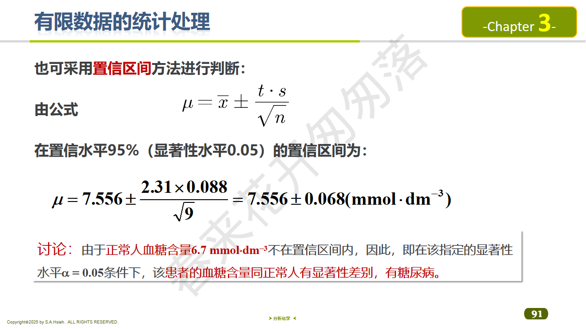
PPT：误差传递公式
系统误差传递：
- 加减法：$\Delta R = \pm\Delta a \pm \Delta b$（绝对误差直接加减）
- 乘除法：$\frac{\Delta R}{R} = \pm\frac{\Delta a}{a} \pm \frac{\Delta b}{b}$（相对误差传递）
随机误差传递：
- 加减法：$s_R = \sqrt{s_a^2 + s_b^2}$
- 乘除法：$\frac{s_R}{R} = \sqrt{\left(\frac{s_a}{a}\right)^2 + \left(\frac{s_b}{b}\right)^2}$
应用：判断哪一步操作对最终误差贡献最大，从而优化实验方案。通常相对误差最大的那一步是"瓶颈"。
一元线性回归 高频
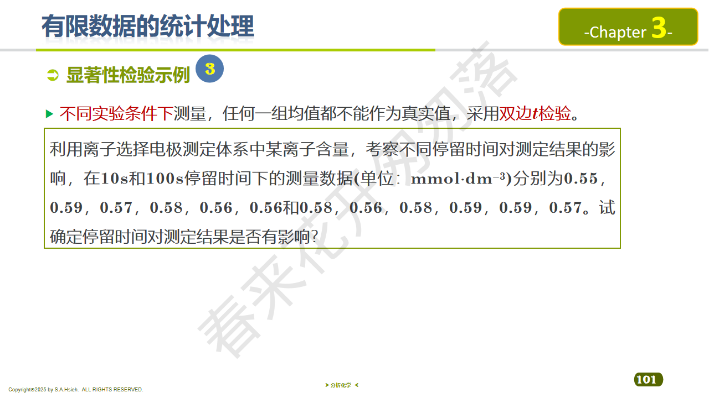
PPT：线性回归
$$y = a + bx$$
$$b = \frac{n\sum x_i y_i - \sum x_i \sum y_i}{n\sum x_i^2 - (\sum x_i)^2}, \quad a = \bar{y} - b\bar{x}$$
相关系数：
$$r = \frac{n\sum x_i y_i - \sum x_i \sum y_i}{\sqrt{[n\sum x_i^2 - (\sum x_i)^2][n\sum y_i^2 - (\sum y_i)^2]}}$$
$|r|$ 越接近 1，线性关系越好。通常要求 $|r| > 0.999$。
五、第五章 酸碱平衡与酸碱滴定法（重点章节）
本章是全卷分值最高的章节，几乎每种题型都会涉及！内容分为11个Part：活度 → 质子理论 → 分布分数 → PBE → pH计算 → 缓冲溶液 → lgc图 → 指示剂 → 滴定曲线 → 终点误差 → 应用。
第五章全部公式速查（考前必背）
| 类型 | 公式 | 条件/备注 |
|---|
| 活度 | $a = \gamma c$ | $\gamma$由Debye-Hückel算 |
| 共轭关系 | $K_aK_b = K_w = 10^{-14}$ | 25°C |
| 一元弱酸分布 | $\delta_{HA}=\frac{[H^+]}{[H^+]+K_a}$ | pH=pK$_a$时$\delta$=0.5 |
| 强酸pH（精确） | $[H^+]=\frac{c+\sqrt{c^2+4K_w}}{2}$ | $c<10^{-6}$时必须用 |
| 弱酸pH（最简） | $[H^+]=\sqrt{cK_a}$ | $c/K_a\geq400$ 且 $cK_a\geq20K_w$ |
| 弱酸pH（近似） | $[H^+]=\frac{-K_a+\sqrt{K_a^2+4cK_a}}{2}$ | $cK_a\geq20K_w$ 但 $c/K_a<400$ |
| 弱酸pH（含$K_w$） | $[H^+]=\sqrt{K_ac+K_w}$ | $cK_a<20K_w$ |
| 两性物质（最简） | $[H^+]=\sqrt{K_{a1}K_{a2}}$ | $c\geq20K_{a1}$ 且 $cK_{a2}\geq20K_w$ |
| 两性物质（近似） | $[H^+]=\sqrt{\frac{K_{a1}(K_{a2}c+K_w)}{c+K_{a1}}}$ | 通用但复杂 |
| 缓冲液pH | $\text{pH}=\text{p}K_a+\lg\frac{c_b}{c_a}$ | Henderson方程 |
| 缓冲容量 | $\beta=2.303C\frac{K_a[H^+]}{(K_a+[H^+])^2}$ | $\beta_{max}$在$c_a=c_b$时 |
| 混合弱酸 | $[H^+]=\sqrt{K_Ac_A+K_Bc_B}$ | 两弱酸同时解离 |
| 直接滴定判据 | $cK_a\geq10^{-8}$ | 突跃≥0.3pH |
| 分步滴定判据 | $K_{a1}/K_{a2}\geq10^5$ | 两突跃不重叠 |
| $E_t$（强酸-强碱） | $E_t=\frac{[OH^-]_{ep}-[H^+]_{ep}}{c_{sp}}\times100\%$ | |
| $E_t$（弱酸-强碱） | $E_t=\frac{10^{\Delta pH}-10^{-\Delta pH}}{\sqrt{K_t}\cdot c_{sp}}\times100\%$ | $K_t=K_a/K_w$，$\Delta pH=pH_{ep}-pH_{sp}$ |
Part 1：活度与活度系数 高频
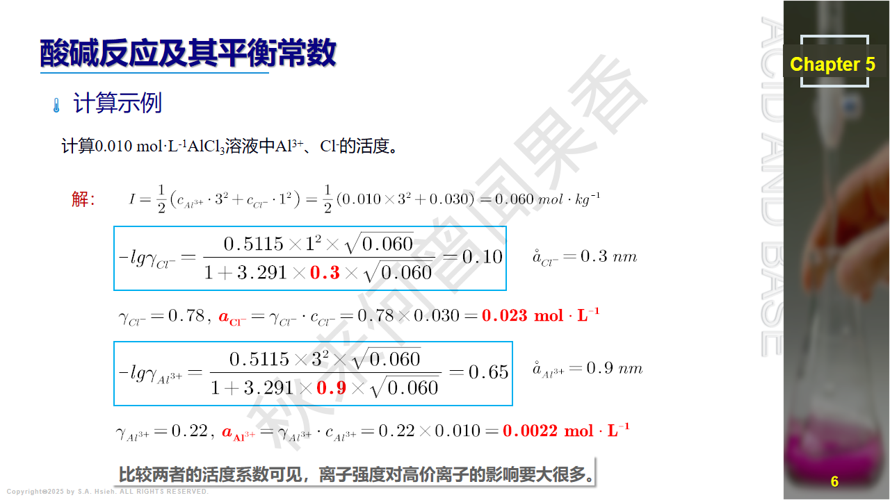
PPT：酸碱反应及其平衡常数
活度（activity）：离子在化学反应中起作用的有效浓度
$$a = \gamma \cdot c$$
- $\gamma$：活度系数（activity coefficient），衡量实际与理想的偏差
- 溶液无限稀时 $\gamma \to 1$，$a \to c$；中性分子和溶剂 $\gamma = 1$
Debye-Hückel 公式（计算活度系数）：
$$-\lg\gamma_i = \frac{0.5115 z_i^2 \sqrt{I}}{1 + Ba_i\sqrt{I}}$$

PPT：常见离子活度系数表（25°C）
- $I$：离子强度，$I = \frac{1}{2}\sum c_i z_i^2$
- $z_i$：离子电荷数；$a_i$：离子有效半径(nm)
- 规律：$I$ 一定时，电荷数越高 → $\gamma$ 越小 → 活度偏离浓度越大
- $I < 0.01$：用 Debye-Hückel 极限公式 $-\lg\gamma_i = 0.512z_i^2\sqrt{I}$
- $I > 0.1$：直接用活度代替浓度计算
PPT例题：MgCl$_2$ 0.030 mol/L + HCl 0.010 mol/L 溶液中 H$^+$ 的活度
$I = \frac{1}{2}(0.030\times2^2 + 0.060\times1^2 + 0.010\times1^2 + 0.010\times1^2) = 0.10$ mol/kg
$-\lg\gamma_{H^+} = \frac{0.5115\times1^2\times\sqrt{0.010}}{1+3.291\times0.9\times\sqrt{0.010}} = 0.084$
$\gamma_{H^+} = 0.82$，$a_{H^+} = 0.82\times0.010 = 0.0082$ mol/L
活度常数、浓度常数与混合常数 高频

PPT：三种平衡常数对比
以 HAc ⇌ H$^+$ + Ac$^-$ 为例：
| 类型 | 表达式 | 特点 |
|---|
| 活度常数 $K_a$ | $K_a = \frac{a_{H^+} \cdot a_{Ac^-}}{a_{HAc}}$ | 热力学常数，仅与温度 $T$ 有关 |
| 浓度常数 $K_a^c$ | $K_a^c = \frac{[H^+][Ac^-]}{[HAc]}$ | 与 $T$ 和离子强度 $I$ 有关 |
| 混合常数 $K_a^M$ | $K_a^M = \frac{a_{H^+}[Ac^-]}{[HAc]}$ | 与 $T$、$I$ 有关，pH计常用 |
大小关系：$K_a < K_a^M < K_a^c$，即 $\text{p}K_a > \text{p}K_a^M > \text{p}K_a^c$
实际处理：一般分析（$I = 0.1\sim0.5$ mol/kg）用浓度（混合）常数代替活度常数。对精确度要求较高时（如标准缓冲液pH计算），需考虑 $I$ 的影响。
Part 2：质子理论 必考
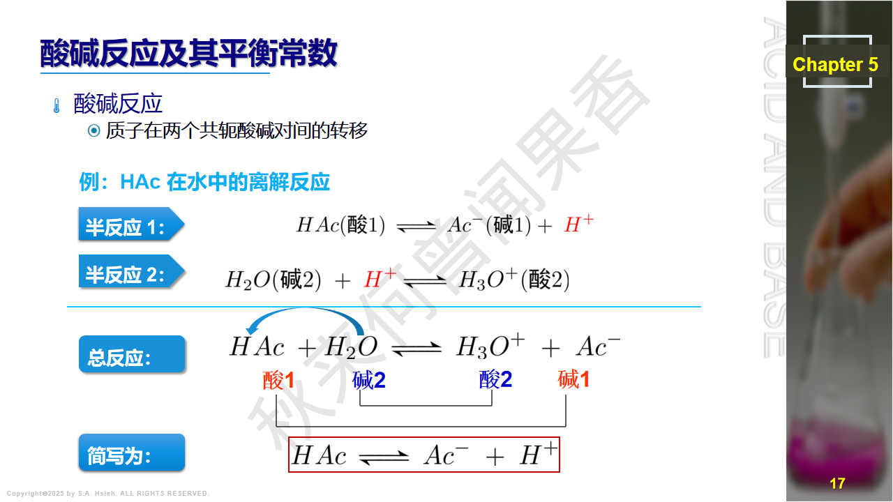
PPT：酸碱半反应
Brønsted-Lowry 质子理论核心：
- 酸：能给出质子的物质（质子供体）→ 酸 ⇌ 共轭碱 + H$^+$
- 碱：能接受质子的物质（质子受体）→ 碱 + H$^+$ ⇌ 共轭酸
- 酸碱半反应：不能单独存在，必须成对出现（共轭酸碱对）
PPT示例：
HAc ⇌ Ac$^-$ + H$^+$（HAc/Ac$^-$ 共轭对）
NH$_4^+$ ⇌ NH$_3$ + H$^+$（NH$_4^+$/NH$_3$ 共轭对）
HA ⇌ A$^-$ + H$^+$（一般表示）
共轭酸 ⇌ 碱 + 质子
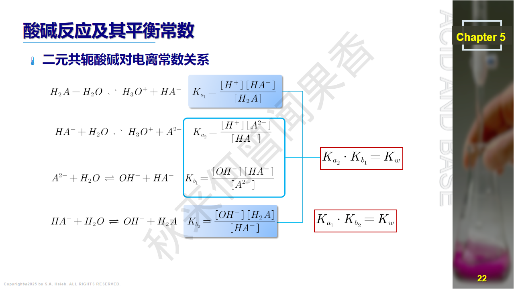
PPT：共轭酸碱对 Ka·Kb = Kw
共轭酸碱对电离常数关系：
$$K_a \cdot K_b = K_w = 10^{-14} \quad (25°\text{C})$$
$$\text{p}K_a + \text{p}K_b = \text{p}K_w = 14.00$$
- 酸越强（$K_a$ 越大），其共轭碱越弱（$K_b$ 越小）
- 两性物质：既可给出质子又可接受质子（H$_2$O、HCO$_3^-$、H$_2$PO$_4^-$、NH$_4$Ac 中的离子、氨基酸）
Part 3：分布分数 $\delta$ 必考
定义：溶液中某物种的平衡浓度占总浓度（分析浓度 $c$）的分数
一元弱酸 HA（两种形态 HA 和 A$^-$）：
$$\delta_{\text{HA}} = \frac{[\text{H}^+]}{[\text{H}^+] + K_a}, \quad \delta_{\text{A}^-} = \frac{K_a}{[\text{H}^+] + K_a}$$
- pH = pK$_a$ 时，$\delta_{\text{HA}} = \delta_{\text{A}^-} = 0.5$（两种形态各占一半）
- pH < pK$_a$ → HA 为优势形态；pH > pK$_a$ → A$^-$ 为优势形态

PPT：一元弱酸 HF 的 δ-pH 图和优势区域图（pKa=3.17）
二元弱酸 H$_2$A（三种形态）：
$$\delta_0 = \frac{[\text{H}^+]^2}{D}, \quad \delta_1 = \frac{[\text{H}^+]K_{a1}}{D}, \quad \delta_2 = \frac{K_{a1}K_{a2}}{D}$$
其中 $D = [\text{H}^+]^2 + [\text{H}^+]K_{a1} + K_{a1}K_{a2}$

PPT：二元酸 H₂CO₃ 的 δ-pH 图（pKa1=6.38, pKa2=10.25, ΔpK=3.87）
重要规律：
① 中间型体 $\delta_1$ 在 pH = $\frac{1}{2}(\text{p}K_{a1} + \text{p}K_{a2})$ 时最大
② $\Delta\text{p}K = \text{p}K_{a2} - \text{p}K_{a1}$ 越大，中间型体分布曲线越宽（可独立存在的pH范围越大）
③ 两曲线交点处 pH 即为对应的 pK$_a$ 值

PPT：思考题——H₂A 的 pKa1=4.00, pKa2=8.00，当[H₂A]=[A²⁻]时 pH=?
解：当 $[\text{H}_2\text{A}] = [\text{A}^{2-}]$ 时 → $\delta_0 = \delta_2$ → $[\text{H}^+]^2 = K_{a1}K_{a2}$ → $\text{pH} = \frac{1}{2}(\text{p}K_{a1}+\text{p}K_{a2}) = 6.00$
思考延伸：配制 pH=4.35 的 H₃PO₄ 溶液和 pH=4.35 的 Na₃PO₄ 溶液，哪个中 [HPO₄²⁻] 更大？→ 答案：虽然 pH 相同，但 Na₃PO₄ 溶液总浓度更高（需先中和），所以 [HPO₄²⁻] 更大
Part 4：质子条件式（PBE）书写 必考
两种写法：
① 直接法（常用）：
- 确定零水准：溶液中大量存在的物种 + H$_2$O
- 得质子产物放等号左边（零水准得到 H$^+$ 后的产物）
- 失质子产物放等号右边（零水准失去 H$^+$ 后的产物）
- 注意系数：得/失 $n$ 个质子，系数为 $n$

PPT：间接法（MBE+CBE→PBE）
② 间接法：物料平衡(MBE) + 电荷平衡(CBE) → 消去与质子转移无关的项 → PBE
PPT例：$c$ mol/L Na$_2$SO$_3$ 溶液
MBE：$[\text{H}_2\text{SO}_3] + [\text{HSO}_3^-] + [\text{SO}_3^{2-}] = c$，$[\text{Na}^+] = 2c$
CBE：$[\text{Na}^+] + [\text{H}^+] = [\text{OH}^-] + [\text{HSO}_3^-] + 2[\text{SO}_3^{2-}]$
代入消去 Na$^+$ 和 $c$：
PBE：$[\text{H}^+] + [\text{HSO}_3^-] + 2[\text{H}_2\text{SO}_3] = [\text{OH}^-]$
常考 PBE 汇总：
| 溶液 | 零水准 | PBE |
|---|
| NaH$_2$PO$_4$ | H$_2$PO$_4^-$, H$_2$O | $[\text{H}_3\text{PO}_4]+[\text{H}^+]=[\text{HPO}_4^{2-}]+2[\text{PO}_4^{3-}]+[\text{OH}^-]$ |
| Na$_2$HPO$_4$ | HPO$_4^{2-}$, H$_2$O | $[\text{H}_2\text{PO}_4^-]+2[\text{H}_3\text{PO}_4]+[\text{H}^+]=[\text{PO}_4^{3-}]+[\text{OH}^-]$ |
| Na$_2$CO$_3$ | CO$_3^{2-}$, H$_2$O | $[\text{HCO}_3^-]+2[\text{H}_2\text{CO}_3]+[\text{H}^+]=[\text{OH}^-]$ |
| NaHCO$_3$ | HCO$_3^-$, H$_2$O | $[\text{H}_2\text{CO}_3]+[\text{H}^+]=[\text{CO}_3^{2-}]+[\text{OH}^-]$ |
| (NH$_4$)$_2$HPO$_4$ | NH$_4^+$, HPO$_4^{2-}$, H$_2$O | $[\text{H}_2\text{PO}_4^-]+2[\text{H}_3\text{PO}_4]+[\text{H}^+]=[\text{NH}_3]+[\text{PO}_4^{3-}]+[\text{OH}^-]$ |
| Na$_2$SO$_3$ | SO$_3^{2-}$, H$_2$O | $[\text{HSO}_3^-]+2[\text{H}_2\text{SO}_3]+[\text{H}^+]=[\text{OH}^-]$ |
易错点：系数取决于得/失质子数，不是电荷数！如 H$_2$PO$_4^-$ → PO$_4^{3-}$ 失去 2个 H$^+$，系数为 2。
Part 5：pH 计算公式体系（核心中的核心） 必考
代数法思路（PPT原文）
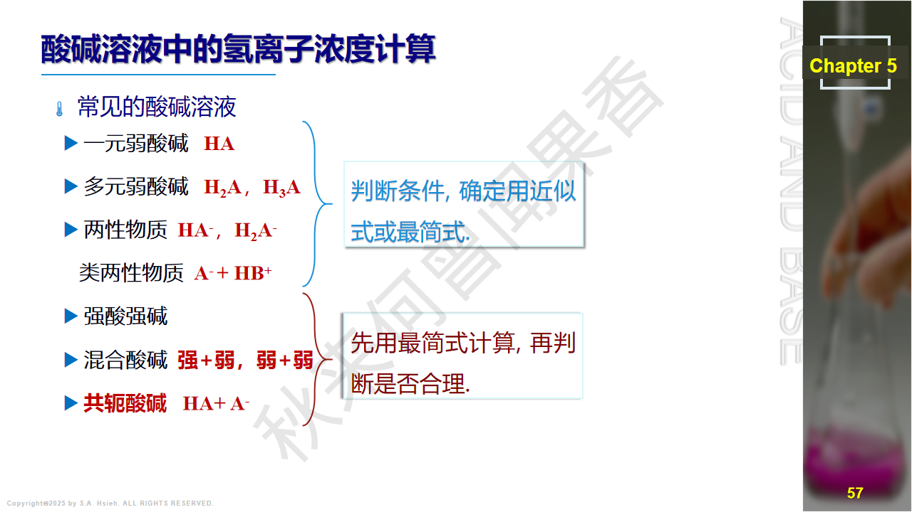
PPT：pH 计算的代数法思路
流程：物料平衡 + 质子条件 + 电荷平衡 → [H$^+$] 精确表达式 → 近似处理（相对误差 <5%，忽略次要项，以 $c$ 代替 $[…]$）→ 近似式 → 进一步简化 → 最简式
5.1 强酸/强碱 pH
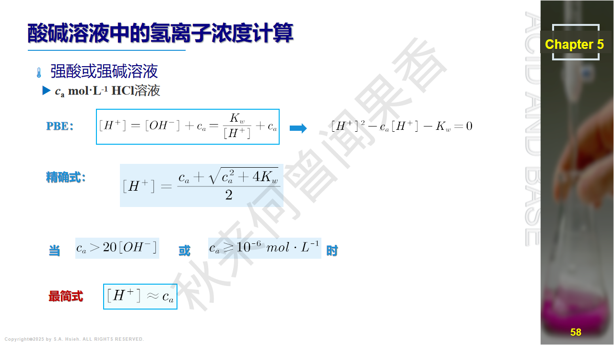
PPT：强酸 pH 精确式推导（从PBE出发）
强酸 HCl（$c_a$ mol/L）精确式：
PBE：$[\text{H}^+] = [\text{OH}^-] + c_a = \frac{K_w}{[\text{H}^+]} + c_a$
$$[\text{H}^+] = \frac{c_a + \sqrt{c_a^2 + 4K_w}}{2}$$
强碱 NaOH（$c_b$ mol/L）精确式：
$$[\text{OH}^-] = \frac{c_b + \sqrt{c_b^2 + 4K_w}}{2}$$
最简式条件：$c_a > 20[\text{OH}^-]$ 或 $c_a > 10^{-6}$ mol/L 时
$$[\text{H}^+] \approx c_a \quad \text{（强酸）}, \quad [\text{OH}^-] \approx c_b \quad \text{（强碱）}$$
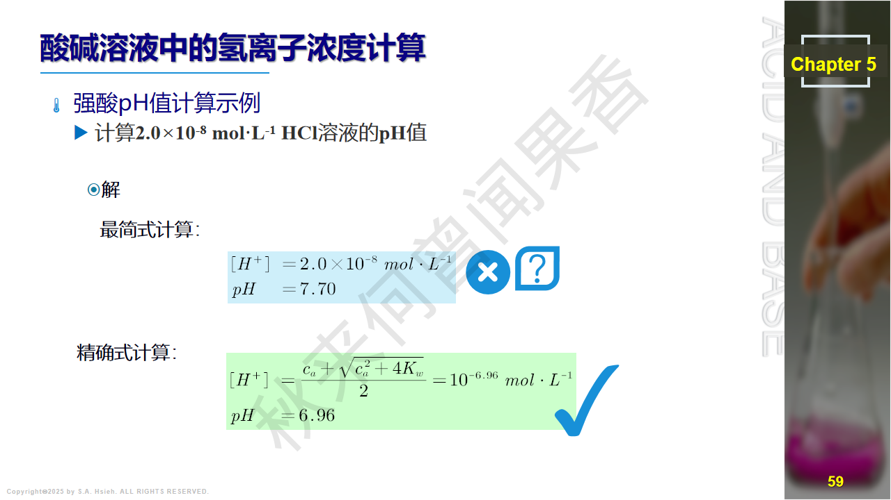
PPT：极稀强酸 pH 计算（$2.0\times10^{-8}$ mol/L HCl）
PPT经典例题：$2.0\times10^{-8}$ mol/L HCl 的 pH
错误做法：$[\text{H}^+]=2.0\times10^{-8}$，pH=7.70 → pH>7? 酸溶液怎么会碱性？ ✗
正确做法（精确式）：
$[\text{H}^+] = \frac{2.0\times10^{-8}+\sqrt{(2.0\times10^{-8})^2+4\times10^{-14}}}{2} = 10^{-6.96}$
pH = 6.96（略小于7，合理！）✓
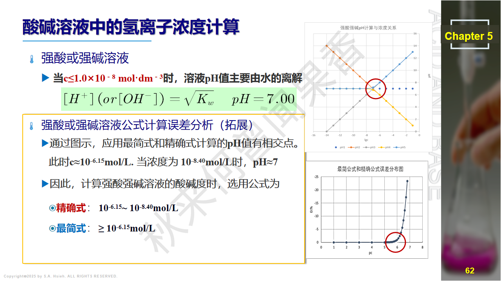
PPT：强碱 pH 计算示例
PPT例：$2.0\times10^{-5}$ mol/L NaOH → $c > 10^{-6}$ → $[\text{OH}^-] = 2.0\times10^{-5}$，pOH=4.70，pH=9.30
关键判断：$c > 10^{-6}$ mol/L 用最简式；$c < 10^{-6}$ mol/L 必须用精确式。极稀强酸的 pH 无限趋近但永远不会超过 7。
5.2 一元弱酸（碱）pH 计算——完整推导链 必考
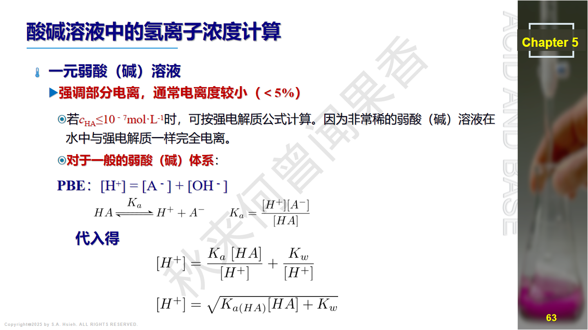
PPT：弱酸精确式（从PBE推导）
Step 1 — 精确式（三次方程）：
PBE：$[\text{H}^+] = [\text{A}^-] + [\text{OH}^-]$
代入 $K_a$ 和 $K_w$：
$$[\text{H}^+] = \frac{K_a[\text{HA}]}{[\text{H}^+]} + \frac{K_w}{[\text{H}^+]}$$
$$[\text{H}^+]^2 = K_a[\text{HA}] + K_w$$
$$[\text{H}^+] = \sqrt{K_a[\text{HA}] + K_w} = \sqrt{K_a(c - [\text{H}^+]\cdot\frac{c}{[\text{H}^+]+K_a}) + K_w}$$
整理得精确三次方程：$[\text{H}^+]^3 + K_a[\text{H}^+]^2 - (K_ac + K_w)[\text{H}^+] - K_aK_w = 0$
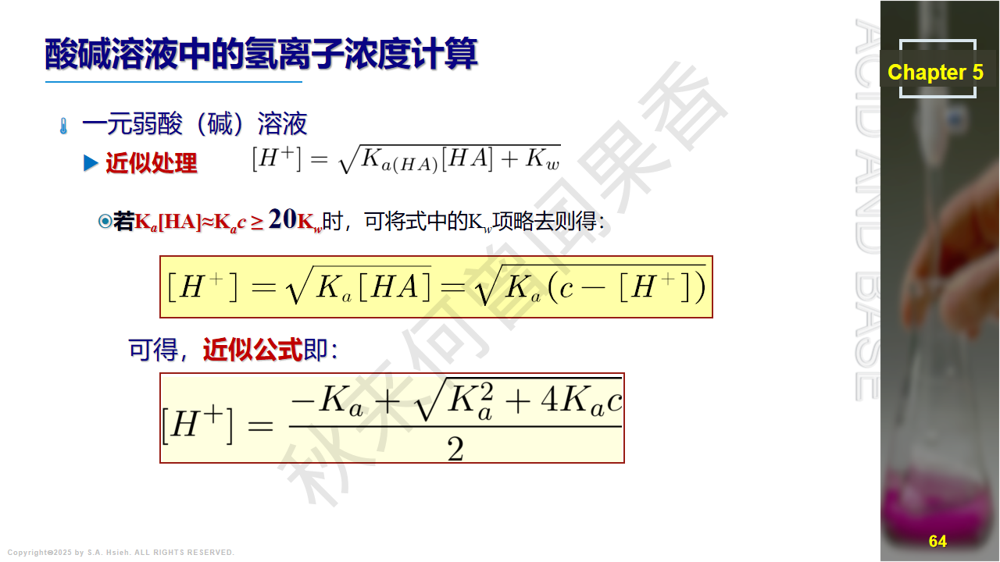
PPT：近似处理——忽略 Kw 项
Step 2 — 近似式（忽略水的解离）：
条件：$K_a[\text{HA}] \approx K_ac \geq 20K_w$（即 $cK_a \geq 20K_w = 2\times10^{-13}$）
$$[\text{H}^+] = \sqrt{K_a[\text{HA}]} = \sqrt{K_a(c - [\text{H}^+])}$$
$$[\text{H}^+] = \frac{-K_a + \sqrt{K_a^2 + 4K_ac}}{2}$$
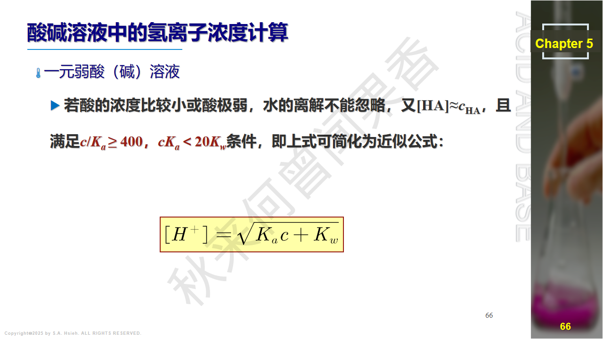
PPT：最简式——条件 c/Ka ≥ 400
Step 3 — 最简式（进一步忽略解离消耗）：
条件：$K_a/c < 2.5\times10^{-3}$，即 $c/K_a \geq 400$（解离度 $\alpha < 5\%$，$c - [\text{H}^+] \approx c$）
$$\boxed{[\text{H}^+] = \sqrt{cK_a}}$$
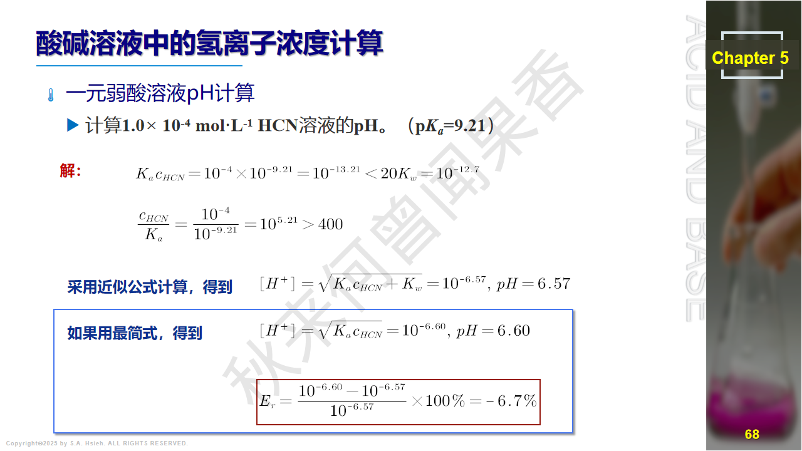
PPT：考虑水解离的近似式
特殊情况 — 极弱酸/极稀（$cK_a < 20K_w$）：
水的解离不可忽略，但 $c/K_a \geq 400$ 仍成立时：
$$[\text{H}^+] = \sqrt{K_ac + K_w}$$
一元弱酸公式选择总表（PPT原文）
条件①
$cK_a$ vs $20K_w$ | 条件②
$c/K_a$ vs 400 | 使用公式 | 适用情况 |
|---|
| $cK_a \geq 20K_w$ ✓ | $c/K_a \geq 400$ ✓ | $[\text{H}^+] = \sqrt{cK_a}$（最简式） | 最常见 |
| $cK_a \geq 20K_w$ ✓ | $c/K_a < 400$ ✗ | $[\text{H}^+] = \frac{-K_a+\sqrt{K_a^2+4cK_a}}{2}$（近似式） | 较弱酸/较稀 |
| $cK_a < 20K_w$ ✗ | $c/K_a \geq 400$ ✓ | $[\text{H}^+] = \sqrt{K_ac+K_w}$（含$K_w$式） | 极弱酸 |
| $cK_a < 20K_w$ ✗ | $c/K_a < 400$ ✗ | 精确三次方程 | 极稀极弱酸 |
判断顺序：先算 $c/K_a$（是否≥400）→ 再算 $cK_a$ vs $20K_w$（是否需考虑水）。两个条件都满足才能用最简式！
全溶液类型 pH 判别决策系统（考试核心！拿到题先走这张图）
拿到一道"求 pH"的题目，按以下步骤判断溶液类型 → 选公式 → 验条件 → 计算。
Step 0：判断溶液类型
| 问自己 | 答案 | → 跳转 |
|---|
| 溶质是强酸/强碱吗？ | 是 | → 类型 A（强酸碱） |
| 溶质是一元弱酸/弱碱吗？ | 是 | → 类型 B（一元弱酸碱） |
| 溶质是多元弱酸（H₂A、H₃A…）吗？ | 是 | → 类型 C（多元弱酸） |
| 溶质是酸式盐/两性物质（NaHA、NaHCO₃…）吗？ | 是 | → 类型 D（两性物质） |
| 溶质是多元弱酸的正盐（Na₂CO₃、Na₃PO₄…）吗？ | 是 | → 类型 E（多元弱酸盐，按碱处理） |
| 是缓冲溶液（弱酸+共轭碱 混合）吗？ | 是 | → 类型 F（缓冲液） |
| 是两种弱酸混合 / 弱酸+强酸混合吗？ | 是 | → 类型 G（混合酸碱） |
类型 A：强酸 / 强碱
| 判别条件 | 公式 | 说明 |
|---|
| $c \geq 10^{-6}$ mol/L | 强酸：$[\text{H}^+] = c$
强碱：$[\text{OH}^-] = c$，$\text{pH}=14-\text{pOH}$ | 最简式，最常用 |
| $c < 10^{-6}$ mol/L | 强酸：$[\text{H}^+] = \frac{c + \sqrt{c^2 + 4K_w}}{2}$
强碱：$[\text{OH}^-] = \frac{c + \sqrt{c^2 + 4K_w}}{2}$ | 必须用精确式！
否则酸可能算出pH>7 |
陷阱例：$2.0\times10^{-8}$ mol/L HCl
错：$[\text{H}^+]=2\times10^{-8}$，pH=7.70（碱性？不对！）
对：精确式 → $[\text{H}^+]=10^{-6.96}$，pH=6.96 ✓
类型 B：一元弱酸 HA / 一元弱碱 B
两个条件必须都判断：
| 编号 | 条件 | 物理意义 | 判据 |
|---|
| 条件① | $cK_a$ vs $20K_w$
（即 $cK_a$ vs $2\times10^{-13}$） | 弱酸自身解离产生的 H⁺ 是否远大于水的解离 | $cK_a \geq 20K_w$ → 可忽略水
$cK_a < 20K_w$ → 需考虑水 |
| 条件② | $c/K_a$ vs 400
（等价于解离度 $\alpha$ vs 5%） | 弱酸解离消耗的 HA 是否可忽略
（$c-[\text{H}^+] \approx c$？） | $c/K_a \geq 400$ → 可忽略消耗
$c/K_a < 400$ → 不可忽略 |
四种组合 → 四个公式：
条件①
水的解离 | 条件②
解离消耗 | 公式 | 名称 |
|---|
| ✓ 可忽略水 | ✓ 可忽略消耗 | $$[\text{H}^+] = \sqrt{cK_a}$$ | 最简式
（最常用！） |
| ✓ 可忽略水 | ✗ 不可忽略消耗 | $$[\text{H}^+] = \frac{-K_a + \sqrt{K_a^2 + 4cK_a}}{2}$$ | 近似式
（一元二次方程） |
| ✗ 需考虑水 | ✓ 可忽略消耗 | $$[\text{H}^+] = \sqrt{K_ac + K_w}$$ | 含 $K_w$ 式
（极弱酸） |
| ✗ 需考虑水 | ✗ 不可忽略消耗 | $[\text{H}^+]^3 + K_a[\text{H}^+]^2$
$- (K_ac+K_w)[\text{H}^+] - K_aK_w = 0$ | 精确式
（三次方程，极少用） |
弱碱完全对称：把上面所有公式中 $[\text{H}^+]$ → $[\text{OH}^-]$，$K_a$ → $K_b$，最后 pH = 14 − pOH。
快速判断流程（做题时照着走）：
① 算 $c/K_a$（或 $c/K_b$）→ 若 ≥400 → 解离消耗可忽略 ✓
② 算 $cK_a$（或 $cK_b$）→ 若 ≥$2\times10^{-13}$ → 水可忽略 ✓
③ 两个都 ✓ → 最简式；只有①✓ → 含$K_w$式；只有②✓ → 近似式（一元二次）；都 ✗ → 精确式
典型酸碱判别练习（覆盖全部4种情况）：
| 酸碱 | $c$ | $K_a$/$K_b$ | $c/K$ | $cK$ | 用哪个？ |
|---|
| HAc | 0.10 | $10^{-4.74}$ | 5500 ✓ | $10^{-5.74}$ ✓ | 最简式 $\sqrt{cK_a}$ |
| HF | 0.010 | $6.6\times10^{-4}$ | 15 ✗ | $6.6\times10^{-6}$ ✓ | 近似式（一元二次） |
| HCN | $10^{-4}$ | $10^{-9.21}$ | $10^{5.2}$ ✓ | $10^{-13.2}$ ✗ | 含$K_w$式 $\sqrt{K_ac+K_w}$ |
| C₂H₅NH₂ | 0.10 | $K_b=10^{-3.25}$ | 178 ✗ | $10^{-4.25}$ ✓ | 近似式（一元二次，算OH⁻） |
| NH₃·H₂O | 0.10 | $K_b=10^{-4.74}$ | 5500 ✓ | $10^{-5.74}$ ✓ | 最简式 $\sqrt{K_bc}$ |
| H₂C₂O₄ | 0.10 | $K_{a1}=10^{-1.22}$ | 1.7 ✗ | $10^{-2.22}$ ✓ | 按一元酸，近似式 |
类型 C：多元弱酸 H$_n$A
先判断能否按一元酸处理（几乎总是可以）：
| 判别条件 | 结论 | 说明 |
|---|
| $K_{a1}/K_{a2} \geq 500$ | 可按一元弱酸处理
$[\text{H}^+]$ 用 $c$ 和 $K_{a1}$ 算 | 忽略第二步及以后的解离
（大部分多元酸满足此条件） |
| $K_{a1}/K_{a2} < 500$ | 不能简单按一元酸
需联立两级平衡 | 极少见（如 H₂SO₃ 的 $K_{a1}/K_{a2}=10^{5.2}$ 勉强满足） |
按一元酸处理后，再用类型 B 的判别流程选公式（用 $K_{a1}$ 代替 $K_a$）。
草酸陷阱：H₂C₂O₄ 的 $K_{a1}=10^{-1.22}$ 非常大 → $c/K_{a1}$ 很容易 <400 → 不能用最简式！必须用一元二次方程。
类型 D：两性物质（酸式盐 NaHA、NaHCO₃、NaH₂PO₄ 等）
精确式：
$$[\text{H}^+] = \sqrt{\frac{K_{a1}(K_{a2}[\text{HA}^-] + K_w)}{[\text{HA}^-] + K_{a1}}}$$
三级简化判别：
条件①
$cK_{a2}$ vs $20K_w$ | 条件②
$c$ vs $20K_{a1}$ | 公式 |
|---|
| $cK_{a2} \geq 20K_w$ ✓ | $c \geq 20K_{a1}$ ✓ | $$[\text{H}^+] = \sqrt{K_{a1} \cdot K_{a2}}$$（最简式，不含 $c$！） |
| $cK_{a2} \geq 20K_w$ ✓ | $c < 20K_{a1}$ ✗ | $$[\text{H}^+] = \sqrt{\frac{K_{a1} \cdot K_{a2} \cdot c}{c + K_{a1}}}$$ |
| $cK_{a2} < 20K_w$ ✗ | $c \geq 20K_{a1}$ ✓ | $$[\text{H}^+] = \sqrt{\frac{K_{a1}(K_{a2}c + K_w)}{c}}$$ |
| $cK_{a2} < 20K_w$ ✗ | $c < 20K_{a1}$ ✗ | $$[\text{H}^+] = \sqrt{\frac{K_{a1}(K_{a2}c + K_w)}{c + K_{a1}}}$$（通用近似式） |
判别练习：
| 两性物质 | $c$ | $K_{a1}$ | $K_{a2}$ | $cK_{a2}$ vs $20K_w$ | $c$ vs $20K_{a1}$ | 公式 |
|---|
| NaHCO₃ | 0.010 | $10^{-6.38}$ | $10^{-10.25}$ | $10^{-12.25}$ ✓ | $0.010 \gg 8\times10^{-6}$ ✓ | 最简式 pH=8.32 |
| NaH₂PO₄ | 0.10 | $10^{-2.12}$ | $10^{-7.20}$ | $10^{-8.2}$ ✓ | $0.10$ vs $0.15$ ✗ | 近似式（但误差小可用最简） |
| Na₂HPO₄ | 0.10 | $10^{-7.20}$ | $10^{-12.36}$ | $10^{-13.36}$ ≈ $20K_w$ 勉强 | $0.10 \gg 10^{-7.2}$ ✓✓ | $\sqrt{K_{a2}K_{a3}}$，pH=9.78 |
| NH₄Ac | 0.10 | $10^{-4.74}$* | $10^{-9.26}$* | ✓ | ✓ | $\sqrt{K_{a,HAc}K_{a,NH_4^+}}$，pH=7.00 |
*NH₄Ac：$K_{a1}$ 取 HAc 的 $K_a$（较强的酸），$K_{a2}$ 取 NH₄⁺ 的 $K_a$（较弱的酸）
最简式的"不含 $c$"陷阱：虽然计算时不需要 $c$，但验证条件时必须用 $c$！浓度太低（如 $10^{-4}$ mol/L 的 NaH₂PO₄）可能不满足条件。
类型 E：多元弱酸的正盐（Na₂CO₃、Na₃PO₄ 等）
处理方法：按一元弱碱处理（盐中的阴离子是碱）
- Na₂CO₃ → CO₃²⁻ 是 HCO₃⁻ 的共轭碱 → $K_b = K_w/K_{a2}$
- Na₃PO₄ → PO₄³⁻ 是 HPO₄²⁻ 的共轭碱 → $K_b = K_w/K_{a3}$
然后用类型 B 的弱碱判别流程（用 $K_b$ 和 $c$ 判断）。
例：0.10 mol/L Na₂CO₃
$K_b = K_w/K_{a2} = 10^{-14}/10^{-10.25} = 10^{-3.75}$
$c/K_b = 0.10/10^{-3.75} = 562 \geq 400$ ✓，$cK_b = 10^{-4.75} \gg 20K_w$ ✓
$[\text{OH}^-] = \sqrt{cK_b} = \sqrt{0.10\times10^{-3.75}} = 10^{-2.38}$
pOH=2.38，pH=11.62
类型 F：缓冲溶液（HA + NaA 或 B + BHCl）
直接用 Henderson-Hasselbalch 方程：
$$\text{pH} = \text{p}K_a + \lg\frac{c_b}{c_a}$$
验证步骤（PPT原文）：
- 先按上式算出 $[\text{H}^+]$（或 $[\text{OH}^-]$）
- 检验 $[\text{H}^+] \ll c_a$ 且 $[\text{H}^+] \ll c_b$（即解离/水解很小，$c_a$/$c_b$ 不需修正）
- 若不满足 → 需修正：$c_a' = c_a + [\text{H}^+]$，$c_b' = c_b - [\text{H}^+]$，重新代入
碱缓冲液：$\text{pOH} = \text{p}K_b + \lg\frac{c_{\text{酸}}}{c_{\text{碱}}}$，然后 pH = 14 − pOH
类型 G：混合酸碱溶液
| 混合类型 | 公式 | 条件 |
|---|
两种弱酸混合
（HA + HB） | $[\text{H}^+] = \sqrt{K_Ac_A + K_Bc_B}$ | $c/K$ 均 ≥400 |
弱酸 + 强酸
（HA + HCl） | $[\text{H}^+] = \frac{(c_a-K_a)+\sqrt{(c_a-K_a)^2+4K_a(c_a+c)}}{2}$ | $c_a$ 为强酸浓度
$c$ 为弱酸浓度 |
弱碱 + 强碱
（B + NaOH） | 同上，$[\text{H}^+]→[\text{OH}^-]$
$K_a→K_b$，$c_a→c_b$ | |
若强酸（碱）浓度远大于弱酸（碱）→ 弱酸解离被完全抑制 → $[\text{H}^+] \approx c_{\text{强酸}}$
pH 计算万能做题流程（考场实战）
- 识别溶液类型（A~G），写出溶质
- 写出 PBE（质子条件式）——确定零水准
- 查/算相关的 $K_a$、$K_b$、$K_w$
- 判别条件：
① $c/K$ vs 400 → 能否忽略解离消耗？
② $cK$ vs $20K_w$ → 能否忽略水？
③ 两性物质额外判：$c$ vs $20K_{a1}$，$cK_{a2}$ vs $20K_w$
④ 多元酸额外判：$K_{a1}/K_{a2}$ vs 500
- 选公式，代入计算
- 验证（必要时）：算出的 $[\text{H}^+]$ 是否满足之前忽略的假设？若不满足需退回上一级公式
- 有效数字：pH 保留小数位数与 pK$_a$ 相当
一元弱酸 pH 经典例题集（PPT原题）
例1（可用最简式）：0.10 mol/L HAc，pK$_a$=4.74
$c/K_a = 0.10/10^{-4.74} = 5495 \geq 400$ ✓
$cK_a = 0.10\times10^{-4.74} = 10^{-5.74} \gg 2\times10^{-13}$ ✓
$[\text{H}^+] = \sqrt{0.10\times10^{-4.74}} = 10^{-2.87}$，pH = 2.87
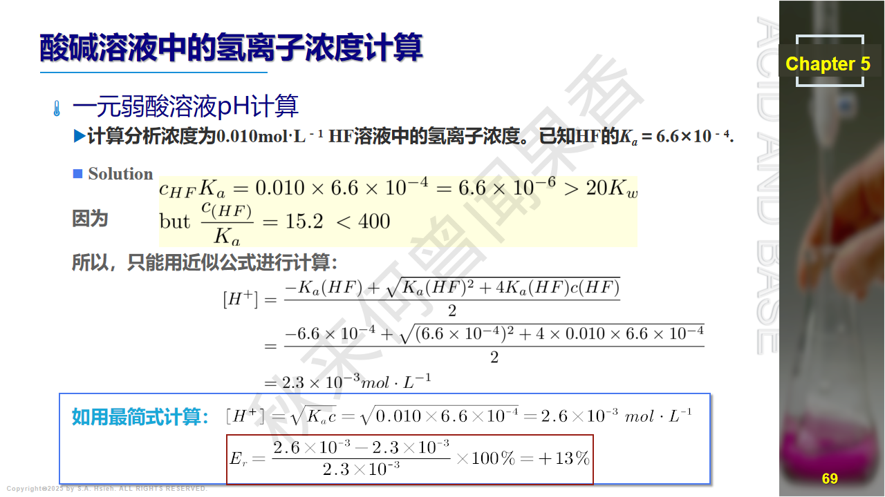
PPT例题：HCN（极弱酸，需考虑 Kw）
例2（需考虑 $K_w$）：$1.0\times10^{-4}$ mol/L HCN，pK$_a$=9.21
$cK_a = 10^{-4}\times10^{-9.21} = 10^{-13.21} < 20K_w = 2\times10^{-13}$ → 需考虑水 ✗
$c/K_a = 10^{-4}/10^{-9.21} = 10^{5.21} > 400$ ✓
用含 $K_w$ 式：$[\text{H}^+] = \sqrt{K_ac + K_w} = \sqrt{10^{-13.21}+10^{-14}} = 10^{-6.57}$
pH = 6.57（若用最简式 $\sqrt{cK_a} = 10^{-6.60}$，$E_r = -6.7\%$ → 误差偏大！）
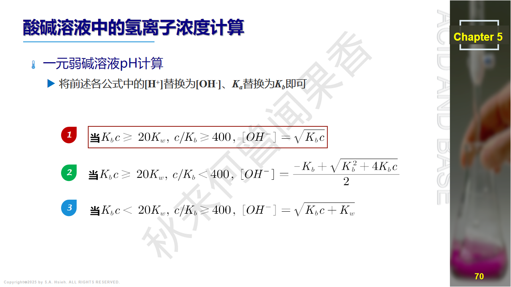
PPT例题：0.010 mol/L HF（不能用最简式！）
例3（不能用最简式）：0.010 mol/L HF，$K_a = 6.6\times10^{-4}$（pK$_a$=3.18）
$cK_a = 0.010\times6.6\times10^{-4} = 6.6\times10^{-6} \gg 20K_w$ ✓
$c/K_a = 0.010/6.6\times10^{-4} = 15.2 < 400$ → 不能用最简式！
用近似式：$[\text{H}^+] = \frac{-6.6\times10^{-4}+\sqrt{(6.6\times10^{-4})^2+4\times6.6\times10^{-4}\times0.010}}{2} = 2.3\times10^{-3}$
pH = 2.64
（若误用最简式：$\sqrt{cK_a} = 2.6\times10^{-3}$，$E_r = +13\%$ → 严重偏大！）
一元弱碱三公式（PPT原文）

PPT：弱碱三级公式（将 [H⁺] 替换为 [OH⁻]，Ka 替换为 Kb）
| 条件 | 公式 |
|---|
| $K_bc \geq 20K_w$ 且 $c/K_b \geq 400$ | $[\text{OH}^-] = \sqrt{K_bc}$（最简式） |
| $K_bc \geq 20K_w$ 但 $c/K_b < 400$ | $[\text{OH}^-] = \frac{-K_b+\sqrt{K_b^2+4K_bc}}{2}$（近似式） |
| $K_bc < 20K_w$ 且 $c/K_b \geq 400$ | $[\text{OH}^-] = \sqrt{K_bc+K_w}$ |
PPT例：0.10 mol/L C$_2$H$_5$NH$_2$，pK$_b$=3.25
$c/K_b = 0.10/10^{-3.25} = 178 < 400$ → 不能用最简式！
$[\text{OH}^-] = \frac{-K_b+\sqrt{K_b^2+4K_bc}}{2} = 10^{-4.06}$
pOH=4.06，pH=9.94
弱碱计算口诀：所有公式将弱酸的 $[\text{H}^+]$ 换成 $[\text{OH}^-]$，$K_a$ 换成 $K_b$ 即可。最后用 pH = 14 − pOH 转换。
5.3 多元弱酸 pH 计算 高频
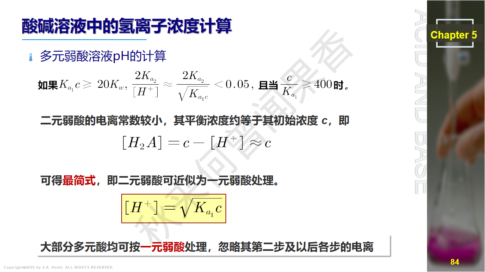
PPT：二元弱酸精确式（从 PBE 推导）
二元弱酸 H$_2$A 精确式：
PBE：$[\text{H}^+] = [\text{HA}^-] + 2[\text{A}^{2-}] + [\text{OH}^-]$
$$[\text{H}^+] = \sqrt{[\text{H}_2\text{A}] \cdot K_{a1}\left(1 + \frac{2K_{a2}}{[\text{H}^+]}\right) + K_w}$$
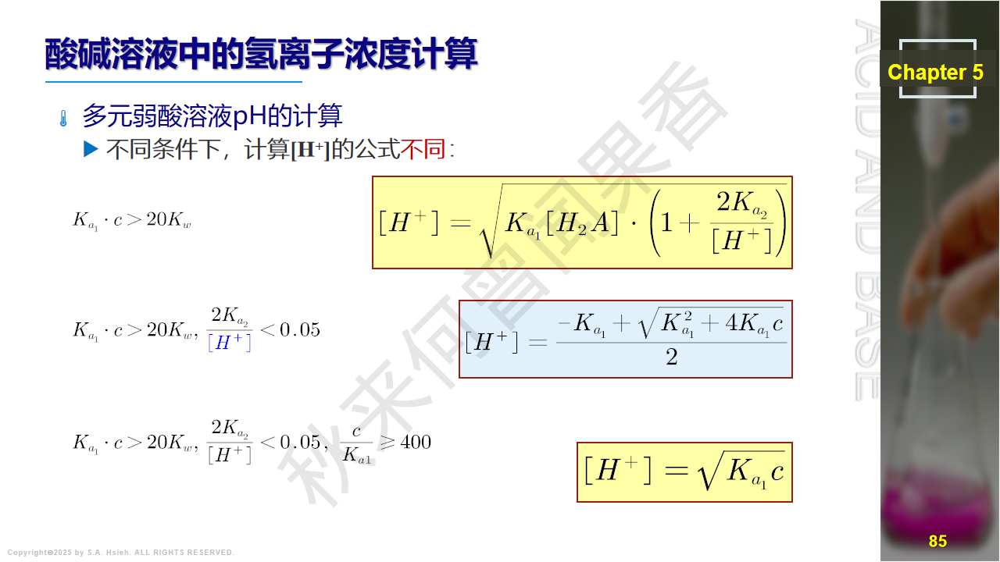
PPT：多元酸按一元酸处理的条件
判断能否按一元酸处理：
- 条件：$\frac{2K_{a2}}{[\text{H}^+]} < 0.05$ 且 $\frac{c}{K_{a1}} \geq 400$
- 简化判据：$K_{a1}/K_{a2} \geq 500$ 时 → 可按一元弱酸处理，$[\text{H}^+] \approx \sqrt{cK_{a1}}$
- 大部分多元酸均可按一元酸处理（忽略第二步及以后的解离）
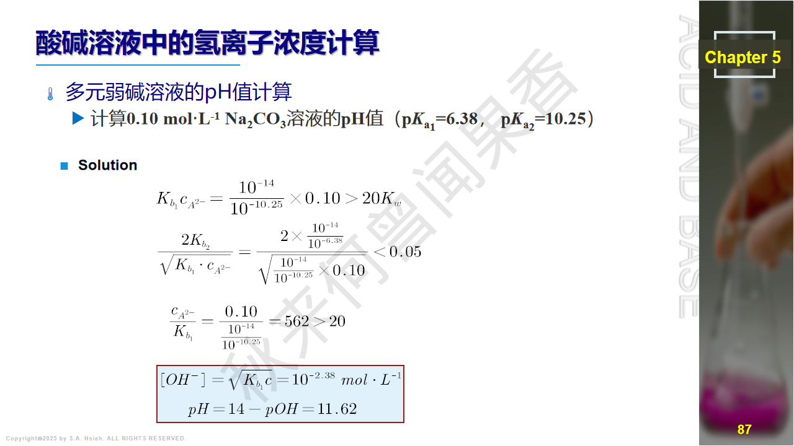
PPT：H₂C₂O₄ 计算示例（不能用最简式！）
PPT例：0.10 mol/L H$_2$C$_2$O$_4$（草酸），pK$_{a1}$=1.22，pK$_{a2}$=4.19
Step 1：能否忽略二级解离？$K_{a1}/K_{a2} = 10^{4.19-1.22} = 10^{2.97} \approx 933 > 500$ ✓ 可按一元酸
Step 2：能否用最简式？$c/K_{a1} = 0.10/10^{-1.22} = 1.66 < 400$ ✗ 不能用最简式！
Step 3：用近似式：$[\text{H}^+] = \frac{-K_{a1}+\sqrt{K_{a1}^2+4cK_{a1}}}{2} = 10^{-1.28}$
pH = 1.28
（若误用最简式：$\sqrt{cK_{a1}} = 10^{-1.11}$，$E_r = 48\%$ → 严重错误！）
草酸是考试陷阱：$K_{a1}$ 很大（$10^{-1.22}$），$c/K_{a1}$ 很容易不满足 400 的条件，必须用近似式（一元二次方程）！
5.4 两性物质 pH 计算——精确→近似→最简全链 必考
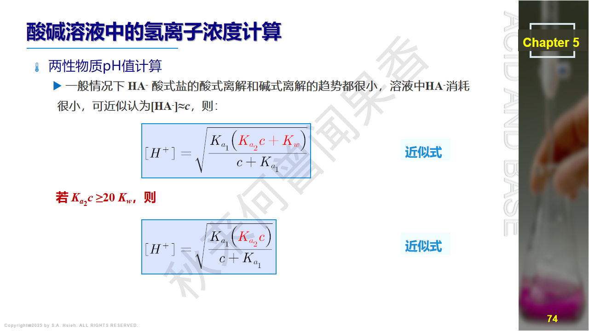
PPT：两性物质（酸式盐 NaHA）精确式推导
以二元酸的酸式盐 NaHA 为例（零水准 HA⁻, H₂O）：
PBE：$[\text{H}^+] + [\text{H}_2\text{A}] = [\text{OH}^-] + [\text{A}^{2-}]$
代入各平衡：
$$[\text{H}^+] = \sqrt{\frac{K_{a1}(K_{a2}[\text{HA}^-] + K_w)}{[\text{HA}^-] + K_{a1}}} \quad \text{（精确式）}$$
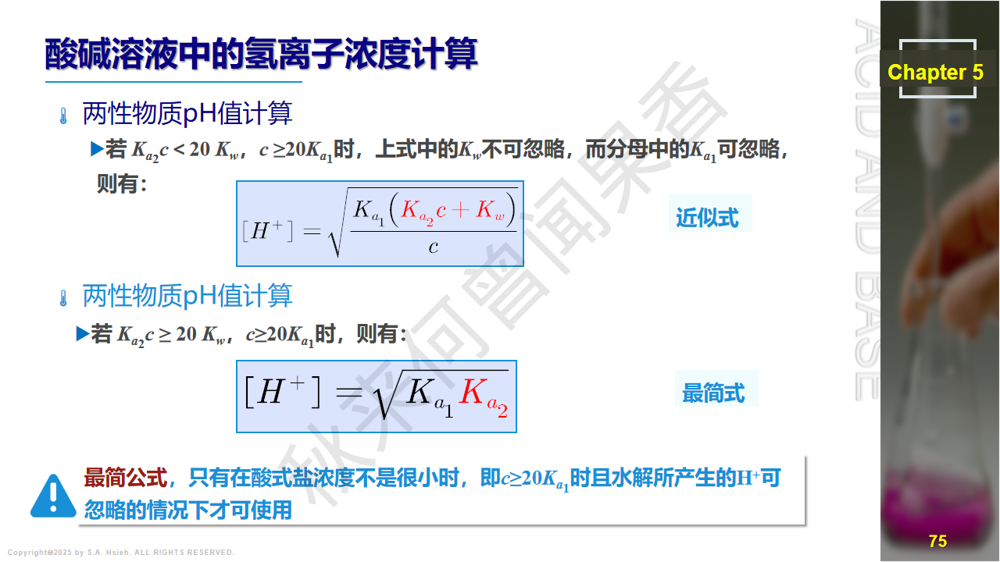
PPT：两性物质近似式
近似式（$[\text{HA}^-] \approx c$，酸式/碱式解离都很小）：
$$[\text{H}^+] = \sqrt{\frac{K_{a1}(K_{a2}c + K_w)}{c + K_{a1}}}$$
进一步简化：
- 若 $K_{a2}c \geq 20K_w$（可忽略 $K_w$）：$[\text{H}^+] = \sqrt{\frac{K_{a1}K_{a2}c}{c + K_{a1}}}$
- 若同时 $c \geq 20K_{a1}$（可忽略分母中 $K_{a1}$）：
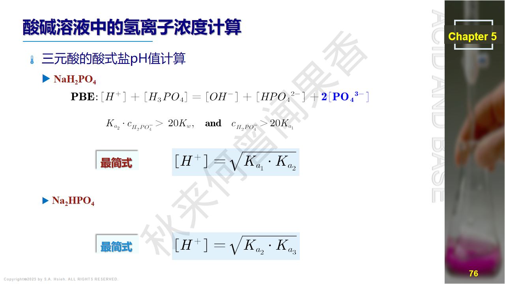
PPT：两性物质最简式及其严格使用条件
$$\boxed{[\text{H}^+] = \sqrt{K_{a1} \cdot K_{a2}}}$$
最简式使用条件（PPT原文强调）：
① $K_{a2}c \geq 20K_w$（即 $cK_{a2} \geq 2\times10^{-13}$）
② $c \geq 20K_{a1}$
只有在酸式盐浓度不是很小时，即 $c \geq 20K_{a1}$ 且水解所产生的 H⁺ 可忽略的情况下才可使用！
结果不含浓度 $c$，但验证条件必须用到 $c$！
三元酸式盐的公式推广：
| 酸式盐 | 最简式 | 使用的 Ka |
|---|
| NaH$_2$PO$_4$（第一酸式盐） | $[\text{H}^+]=\sqrt{K_{a1}\cdot K_{a2}}$ | 两侧的 Ka |
| Na$_2$HPO$_4$（第二酸式盐） | $[\text{H}^+]=\sqrt{K_{a2}\cdot K_{a3}}$ | 两侧的 Ka |
PPT例1：0.10 mol/L NaH$_2$PO$_4$（pK$_{a1}$=2.12，pK$_{a2}$=7.20）
验证：$c=0.10$ vs $20K_{a1}=20\times10^{-2.12}=0.15$ → 0.10 < 0.15，条件②勉强不满足
严格来说应用近似式，但实际误差不大：
$[\text{H}^+] = \sqrt{10^{-2.12}\times10^{-7.20}} = 10^{-4.66}$，pH=4.66（考试中一般仍可用）
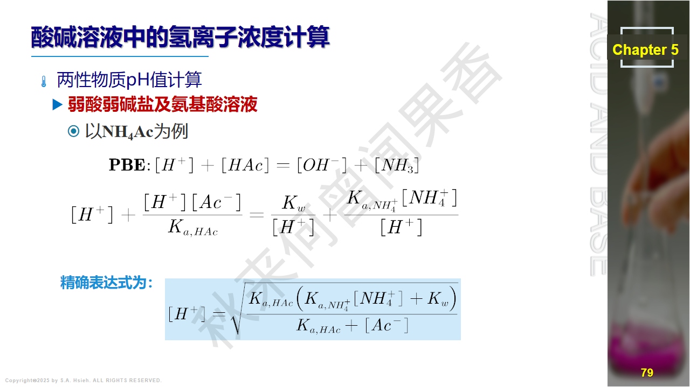
PPT例题：0.010 mol/L NaHCO₃ 的 pH
PPT例2：0.010 mol/L NaHCO$_3$（pK$_{a1}$=6.38，pK$_{a2}$=10.25）
验证①：$cK_{a2}=0.010\times10^{-10.25}=10^{-12.25} > 20K_w=2\times10^{-13}$ ✓
验证②：$c=0.010 > 20K_{a1}=20\times10^{-6.38}=8.3\times10^{-6}$ ✓✓
$[\text{H}^+] = \sqrt{10^{-6.38}\times10^{-10.25}} = 10^{-8.32}$，pH=8.32
PPT例3：0.10 mol/L NH$_4$Ac（pK$_{a,\text{HAc}}$=4.74，pK$_{a,\text{NH}_4^+}$=9.26）
这是两种弱酸的共轭碱/酸混合物 → 也是两性物质！
$[\text{H}^+] = \sqrt{K_{a,\text{HAc}} \cdot K_{a,\text{NH}_4^+}} = \sqrt{10^{-4.74}\times10^{-9.26}} = 10^{-7.00}$
pH = 7.00（中性！因为两个 pK$_a$ 关于 7 对称）
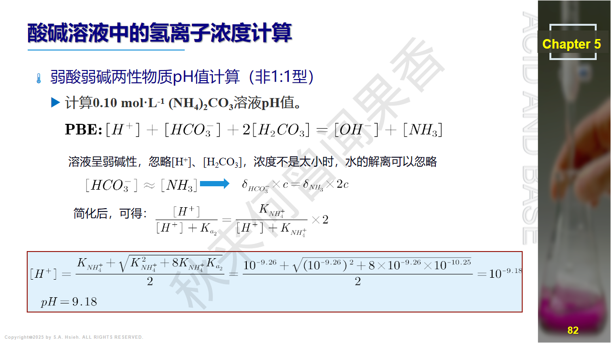
PPT：NH₄Ac 两性物质 pH = 7.00
5.5 混合酸碱溶液 pH 计算 高频
① 两种一元弱酸混合（HA + HB）：
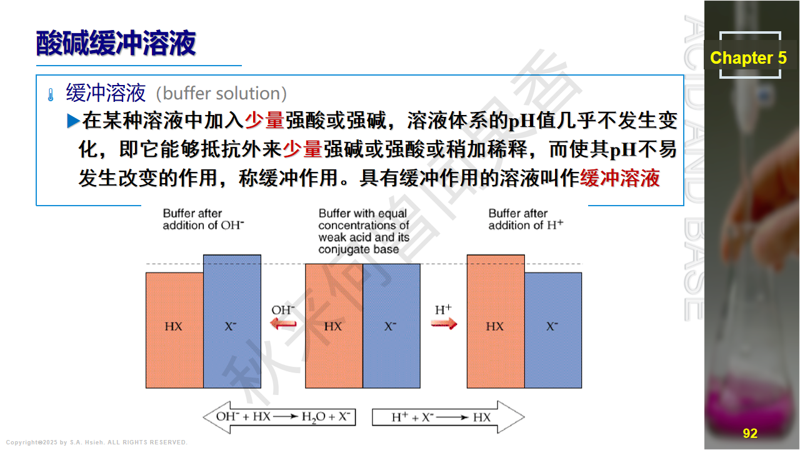
PPT：混合弱酸 pH 近似公式
$$[\text{H}^+] = \sqrt{K_{\text{HA}}c_{\text{HA}} + K_{\text{HB}}c_{\text{HB}}}$$
若 $K_{\text{HA}}c_{\text{HA}} \gg K_{\text{HB}}c_{\text{HB}}$ → $[\text{H}^+] \approx \sqrt{K_{\text{HA}}c_{\text{HA}}}$（按较强酸处理）
② 一元弱酸 + 一元强酸混合（HA + HCl）：
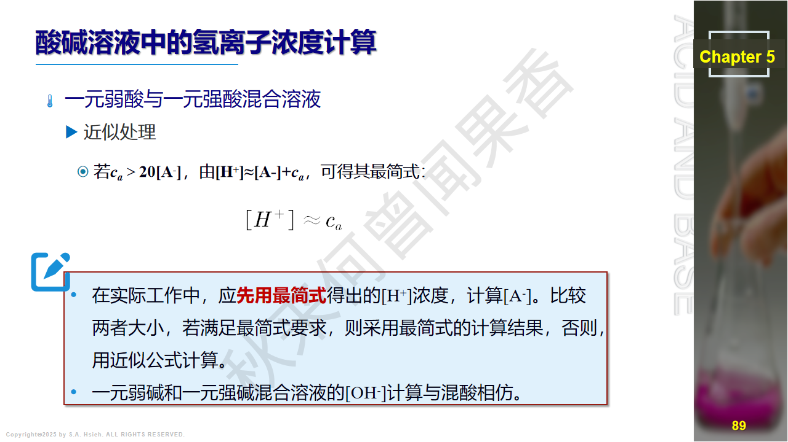
PPT：弱酸 + 强酸混合溶液 pH 公式
PBE：$[\text{H}^+] = [\text{OH}^-] + [\text{A}^-] + c_a$（$c_a$ 为强酸浓度）
溶液呈酸性，$[\text{OH}^-]$ 可忽略：
$$[\text{H}^+] \approx [\text{A}^-] + c_a = \frac{K_a}{K_a+[\text{H}^+]} \cdot c + c_a$$
整理得近似式：
$$[\text{H}^+] = \frac{(c_a - K_a) + \sqrt{(c_a - K_a)^2 + 4K_a(c_a + c)}}{2}$$
简化情况：若 $c_a \gg K_a$ 且 $c_a \gg [\text{A}^-]$（即强酸足够强），则 $[\text{H}^+] \approx c_a$，弱酸的解离被完全抑制。
③ 一元弱碱 + 一元强碱混合（B + NaOH）：
同理，将上述公式中 $[\text{H}^+]$ 换成 $[\text{OH}^-]$，$K_a$ 换成 $K_b$，$c_a$ 换成 $c_b$。
Part 6：缓冲溶液 必考
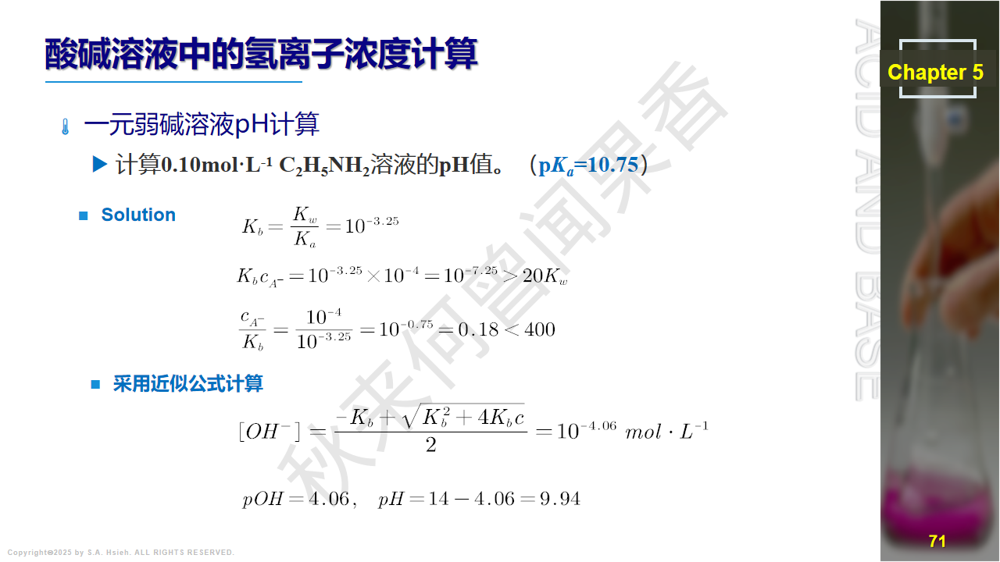
PPT：缓冲溶液原理
Henderson-Hasselbalch 方程：
$$\text{pH} = \text{p}K_a + \lg\frac{c_b}{c_a} = \text{p}K_a + \lg\frac{c(\text{A}^-)}{c(\text{HA})}$$
缓冲溶液 pH 计算方法（PPT原文）：
- 先按最简式计算 $[\text{H}^+]$ 或 $[\text{OH}^-]$
- 然后验证 $[\text{H}^+]$（或 $[\text{OH}^-]$）是否远小于 $c_a$ 和 $c_b$
- 若不满足，需要修正（$c_a' = c_a + [\text{H}^+]$，$c_b' = c_b - [\text{H}^+]$）
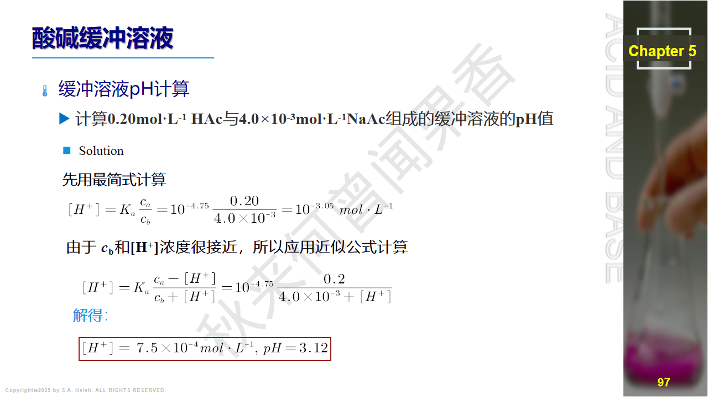
PPT：缓冲液 pH 计算示例
PPT例：0.10 mol/L NH$_4$Cl + 0.20 mol/L NH$_3$·H$_2$O（pK$_b$=4.75）
$[\text{OH}^-] = K_b \cdot \frac{c_b}{c_a} = 10^{-4.75}\times\frac{0.20}{0.10} = 10^{-4.45}$
验证：$[\text{OH}^-] = 10^{-4.45} \ll c_a = 0.10$ ✓，最简式合理
pH = 14 - pOH = 14 - 4.45 = 9.55
缓冲溶液核心要点汇总：
| 要素 | 内容 |
|---|
| 选择缓冲对 | $\text{p}K_a$ 尽量接近目标 pH（$|\text{pH}-\text{p}K_a| < 1$） |
| 有效缓冲范围 | $\text{p}K_a \pm 1$（缓冲比在 1:10 ~ 10:1 之间） |
| 缓冲能力最强 | 缓冲比 = 1（$c_a = c_b$），此时 pH = pK$_a$ |
| 总浓度影响 | 总浓度越大 → 缓冲容量越大（能抵御更多酸碱加入） |
| 缓冲容量 $\beta$ | $\beta = 2.303C_{\text{总}}\frac{K_a[\text{H}^+]}{(K_a+[\text{H}^+])^2}$，缓冲比=1时$\beta$最大 |
经典考题：配 pH=9.00 缓冲液 → 选 NH$_3$·H$_2$O/NH$_4$Cl（pK$_a$=9.26，范围 8.3~10.3）
配 pH=5.00 缓冲液 → 选 HAc/NaAc（pK$_a$=4.74，范围 3.7~5.7）
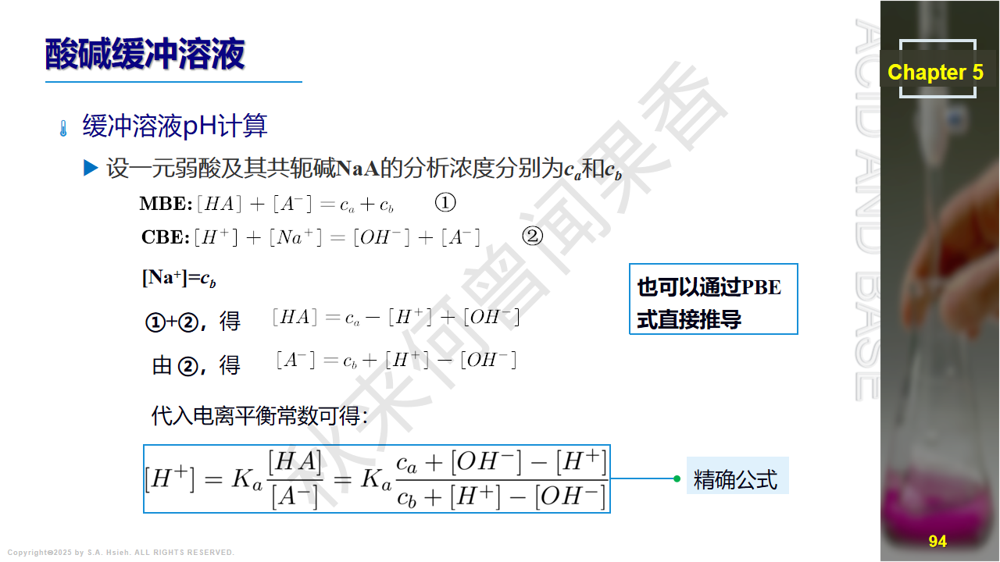
PPT：Henderson-Hasselbalch 方程推导
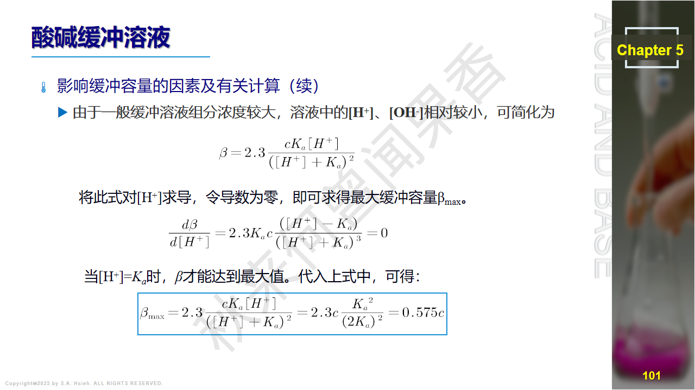
PPT：缓冲容量 β 的定义与公式
缓冲容量 $\beta$（定量描述缓冲能力）：
$$\beta = \frac{dC_b}{d\text{pH}} = 2.303\left(\frac{K_w}{[\text{H}^+]} + [\text{H}^+] + \frac{C_{\text{总}}K_a[\text{H}^+]}{(K_a + [\text{H}^+])^2}\right)$$
- $\beta$ 最大时：$[\text{H}^+] = K_a$，即缓冲比 = 1（$c_a = c_b$），此时 $\beta_{\max} = 0.576C_{\text{总}}$
- $C_{\text{总}}$ 越大 → $\beta$ 越大 → 能抵御更多酸碱的加入
- 缓冲比偏离 1 越远 → $\beta$ 越小 → 缓冲范围外 $\beta \approx 0$
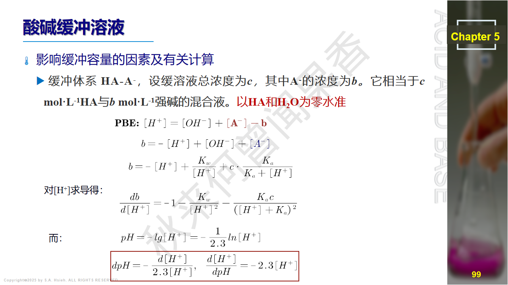
PPT：缓冲液 pH 计算示例 2
PPT例题：向 100 mL pH=5.00 的 HAc/NaAc 缓冲液（$C_{\text{总}}$=0.20 mol/L）中加入 1.00 mL 1.0 mol/L NaOH，求新 pH
解：原有 $c_a = c_b = 0.10$ mol/L（因 pH=pK$_a$+0.26，实际 $c_b/c_a = 10^{0.26} = 1.82$... 简化处理）
加入 NaOH：$n(\text{NaOH}) = 0.001$ mol → HA 减少 0.001 mol，A⁻ 增加 0.001 mol
新 $c_a = (0.10\times0.100 - 0.001)/0.101$，新 $c_b = (0.10\times0.100 + 0.001)/0.101$
pH = pK$_a$ + lg($c_b'/c_a'$) ≈ 变化很小（这就是缓冲作用！）
Part 7：lgc-pH 对数浓度图 高频
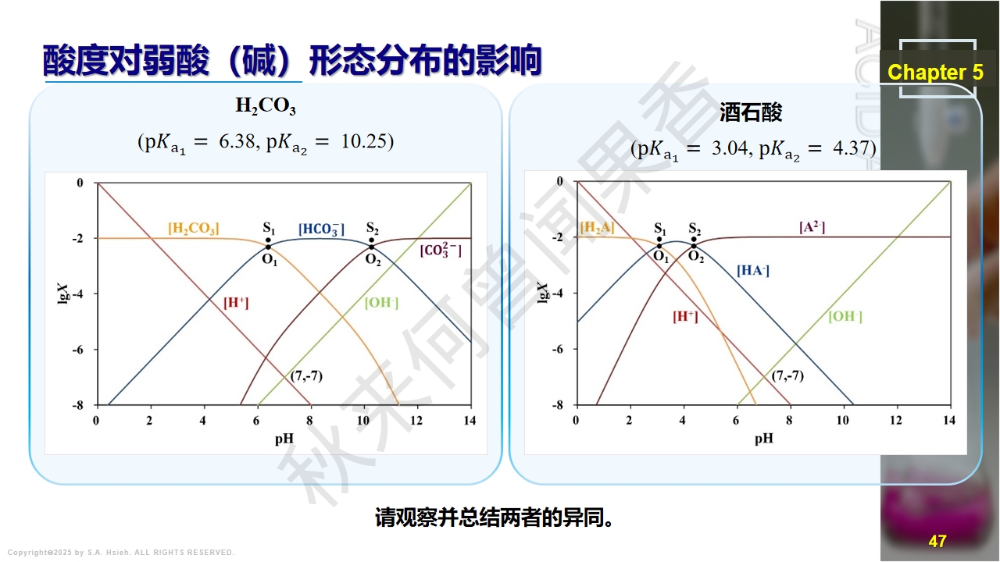
PPT：多元酸各物种 lgc 的精确式
PPT：lgc-pH 对数浓度图
作图方法（以二元酸 H$_2$A 为例，浓度 $c$）：
- H$^+$ 线：lg[H$^+$] = $-$pH（斜率$-1$的直线）
- OH$^-$ 线：lg[OH$^-$] = pH$-14$（斜率$+1$的直线）
- 系统点 S：(pK$_a$, lgc)，即 pH=pK$_a$ 时两相邻物种浓度相等，各为 $c/2$
- 交叉点 O$_1$：(pK$_a$, lgc$-0.3$)——两物种浓度各为总浓度一半
读图要点：
- 两曲线交叉处 pH = pK$_a$
- 可直观判断各pH下哪种物种为优势形态
- 水线（H$^+$/OH$^-$）与酸碱线的交点可判断是否需考虑水的解离
Part 8：酸碱指示剂 必考
PPT：酸碱指示剂原理
原理：HIn（酸色）⇌ H$^+$ + In$^-$（碱色），变色取决于 [HIn]/[In$^-$] 比值

PPT：指示剂变色范围 = pKHIn ± 1（理论值，约1.6个pH单位）
理论变色范围：pH = pK$_{\text{HIn}} \pm 1$（约 1.6 个 pH 单位）
实际变色范围因人眼对颜色敏感度不同而略有差异
| 指示剂 | pKHIn | 变色范围 | 酸色→碱色 | 适用 |
|---|
| 甲基橙 | 3.46 | pH 3.1~4.4 | 红→橙→黄 | 强酸-弱碱，HCl分步 |
| 甲基红 | 5.00 | pH 4.4~6.2 | 红→橙→黄 | 强酸-弱碱 |
| 溴甲酚绿 | 4.90 | pH 3.8~5.4 | 黄→蓝绿→蓝 | 部分酸碱 |
| 酚酞 | 9.10 | pH 8.0~9.8 | 无色→粉红 | 弱酸-强碱 |
| 百里酚酞 | 10.0 | pH 9.4~10.6 | 无色→蓝 | 极弱酸 |
PPT：影响指示剂变色范围的因素
影响变色范围的因素：
- 离子强度：改变 K$_{\text{HIn}}$ → 变色范围移动。$I$ 增大时变色点pH向减小方向移动
- 温度：影响 K$_{\text{HIn}}$ 和颜色
- 指示剂用量：用量多 → 需更多酸/碱改变比值 → 变色不敏锐（应少加！）
- 溶剂：非水溶剂中 K$_{\text{HIn}}$ 变化
选择三原则：① 变色范围落在滴定突跃内；② 变色点尽量接近计量点 pH；③ 颜色变化敏锐、易观察
Part 9：酸碱滴定曲线 必考
9.1 强酸-强碱滴定曲线
PPT：强酸-强碱滴定曲线

PPT：滴定曲线各段 pH 计算方法
PPT：强酸-强碱滴定曲线完整计算过程
NaOH 滴定 HCl 各段计算（PPT原文）：
| 阶段 | 溶液组成 | pH 计算 | 例（滴定分数 $f$） |
|---|
| 计量点前 | 剩余 HCl + NaCl | $[\text{H}^+]=c_{\text{HCl}}\times\frac{V_0-V}{V_0+V}$ | $f$=0.90 → pH=2.28 |
| 计量点 | NaCl | pH = 7.00 | $f$=1.00 → pH=7.00 |
| 计量点后 | 过量 NaOH + NaCl | $[\text{OH}^-]=c_{\text{NaOH}}\times\frac{V-V_0}{V_0+V}$ | $f$=1.10 → pH=11.68 |
PPT：不同浓度下强酸-强碱滴定突跃（浓度越大突跃越大）
关键结论：
- 0.1 mol/L：突跃 pH 4.3~9.7（约5.4个pH），甲基橙/甲基红/酚酞均可
- 0.01 mol/L：突跃 pH 5.3~8.7（约3.4个pH），只能用甲基红
- 浓度增大10倍 → 突跃范围增加约2个pH单位
9.2 强碱滴定弱酸（NaOH 滴定 HAc）
PPT：弱酸-强碱滴定曲线
PPT：弱酸滴定四个阶段的计算方法
PPT：强碱滴定弱酸的滴定方程推导
PPT：不同 pKa 弱酸滴定曲线对比
四个关键点：
| 点 | 溶液组成 | 计算方法 | 0.1mol/L HAc 结果 |
|---|
| 起始点 | 纯 HA | $[\text{H}^+]=\sqrt{cK_a}$ | pH = 2.87 |
| 半当量点（$f$=0.5） | HA/A⁻ 等量缓冲 | pH = pK$_a$ | pH = 4.74（缓冲能力最强！） |
| 计量点（$f$=1.0） | 纯 NaA（共轭碱水解） | $[\text{OH}^-]=\sqrt{c_{sp}K_b}$ | pH = 8.72（偏碱！） |
| 过量（$f$=1.1） | NaA + 过量 NaOH | $[\text{OH}^-]=c_{\text{过量NaOH}}$ | pH ≈ 11.68 |

PPT：不同 pKa 和浓度下弱酸滴定突跃范围（重要表格！）
PPT关键表格——满足指示剂法酸碱滴定的要求：
- 滴定误差 $\leq \pm 0.2\%$
- 突跃范围 ≥ $\pm 0.3$ pH
- 准则：$cK_a \geq 10^{-8}$
| c (mol/L) | pK$_a$=5, 突跃 | pK$_a$=7, 突跃 | pK$_a$=8, 突跃 |
|---|
| 1.0 | 8.00~11.00 | ΔpH=3.00 | 9.00~11.00 | ΔpH=2.00 | 10.43~10.57 | ΔpH=0.14 |
| 0.1 | 8.00~10.00 | ΔpH=2.00 | 8.00~9.04 | ΔpH=1.04 | 不能滴定 |
| 0.01 | 8.00~9.04 | ΔpH=1.04 | 不能滴定 | 不能滴定 |
规律总结：
① 浓度一定时，K$_a$ 越大，突跃范围越大
② K$_a$ 一定时，浓度越大，突跃范围越大
③ 弱酸稀释10倍：下限不变（由pK$_a$决定），上限降约1个pH
④ 弱酸-强碱计量点在碱性区 → 只能用酚酞（不能用甲基橙！）
9.3 多元酸滴定与分步滴定
PPT：多元酸分步滴定可行性判据
PPT：H₃PO₄ 被 NaOH 滴定的完整曲线（两个突跃）
PPT：H₃PO₄ 各计量点 pH 计算
分步滴定判据：$K_{a1}/K_{a2} > 10^5$ → 可分步滴定
| 酸 | $K_{a1}/K_{a2}$ | 能否分步 | 说明 |
|---|
| H$_2$C$_2$O$_4$（草酸） | $10^{3.0}$ | 不能 | 只有1个突跃，两步合并 |
| H$_2$SO$_3$ | $10^{5.2}$ | 勉强可以 | 两个突跃可分开 |
| H$_3$PO$_4$ | $K_{a1}/K_{a2}=10^{5.1}$ | 第1、2步可分 | 第3步($K_{a3}$太小)不能滴 |
| H$_2$CO$_3$ | $10^{3.7}$ | 不能分步 | 只能整体滴定 |
H$_3$PO$_4$ 滴定详解（PPT重点）：
- 第一计量点（$f=1$）：生成 NaH$_2$PO$_4$，pH≈4.66 → 选甲基橙或甲基红
- 第二计量点（$f=2$）：生成 Na$_2$HPO$_4$，pH≈9.70 → 选酚酞或百里酚酞
- 第三计量点：Na$_3$PO$_4$，但 $cK_{a3}=10^{-13.3} < 10^{-8}$ → 无法准确滴定第三步！
9.4 滴定可行性判据 必考
直接滴定判据：$cK_a \geq 10^{-8}$
常见判断：
• HCOOH（$K_a=10^{-3.74}$）：$cK_a=10^{-4.74} \geq 10^{-8}$ ✓ 能滴定
• H$_3$BO$_3$（$K_a=10^{-9.24}$）：$cK_a=10^{-10.24} < 10^{-8}$ ✗ 不能
• NH$_4^+$（$K_a=10^{-9.26}$）：$cK_a=10^{-10.26} < 10^{-8}$ ✗ 不能
• HF（$K_a=6.8\times10^{-4}$）：$cK_a=6.8\times10^{-5} \geq 10^{-8}$ ✓ 能滴定
Part 10：终点误差计算（林邦公式） 必考
PPT：终点误差的精确定义
PPT：终点误差定义——ep(终点)与sp(计量点)不一致引起的误差
定义：
$$E_t = \frac{\text{终点时过量（或不足）的滴定剂的量}}{\text{化学计量点应加入的滴定剂的量}} \times 100\%$$
$E_t > 0$：过滴定（多加了）；$E_t < 0$：欠滴定（少加了）
10.1 强酸-强碱终点误差
PPT：强酸-强碱终点误差完整推导过程
PPT：强碱滴定强酸终点误差公式
强碱滴定强酸（终点在计量点之后）：
$$E_t = \frac{[\text{OH}^-]_{ep} - [\text{H}^+]_{ep}}{c_{\text{sp}}} \times 100\%$$
强酸滴定强碱：
$$E_t = \frac{[\text{H}^+]_{ep} - [\text{OH}^-]_{ep}}{c_{\text{sp}}} \times 100\%$$
其中 $c_{\text{sp}}$ 为化学计量点时被测物浓度（考虑体积稀释后）
10.2 弱酸-强碱终点误差（林邦公式） 必考
PPT：弱酸-强碱终点误差完整推导
PPT：林邦误差公式推导过程
PPT：林邦误差公式最终形式
林邦公式：
$$E_t = \frac{10^{\Delta\text{pH}} - 10^{-\Delta\text{pH}}}{\sqrt{K_t} \cdot c_{\text{sp,HA}}} \times 100\%$$
其中 $\Delta\text{pH} = \text{pH}_{ep} - \text{pH}_{sp}$，$K_t = K_a/K_w$
注意分子中的正负号！PPT上两种写法等价：
写法1：$\frac{10^{\Delta pH}-10^{-\Delta pH}}{\sqrt{K_t}\cdot c_{sp}}$
写法2：$\frac{10^{-\Delta pH}-10^{\Delta pH}}{\sqrt{K_t}\cdot c_{sp}}$（取决于$E_t$符号约定方向）
关键是看 $\Delta\text{pH}$ 的正负和最终 $E_t$ 的正负是否对应过滴定/欠滴定。
PPT：弱酸-强碱终点误差计算例题
PPT：终点误差图——lg(cKt) vs Et（不同ΔpH的曲线）
PPT：终点误差的应用——计算突跃范围
PPT：终点误差计算要点总结
终点误差计算要点（PPT原文）：
- 根据实际情况写出终点时溶液的 PBE
- 进而求出过量或不足滴定剂的表达式
- 写出误差表达式
- 合理近似，导出用 $\Delta$pH、$c$、$K_t$、$K_a$ 等表达的误差公式
林邦公式的优点：形式简洁、易记易用，且能指出产生终点误差的主要因素（$\Delta$pH 和 $\sqrt{K_t}\cdot c_{sp}$），为减小终点误差提供理论指导。
PPT例：用 0.10 mol/L NaOH 滴定同浓度 HAc（$K_a=10^{-4.75}$），甲基红终点（pH$_{ep}$=5.27）
$c_{sp}=0.0500$ mol/L，$K_t=K_a/K_w=10^{9.25}$
先算 $\text{pH}_{sp}$：$[\text{OH}^-]=\sqrt{0.0500\times10^{-9.25}}=10^{-5.40}$，pH$_{sp}$=8.60
$\Delta\text{pH}=5.27-8.60=-3.33$
$E_t=(10^{-3.33}-10^{3.33})/(10^{4.625}\times0.0500)\times100\% \approx -1.0\%$
误差太大（>0.1%），甲基红不适合滴定弱酸！
Part 11：酸碱滴定法应用 必考
11.1 双指示剂法测混合碱 必考
PPT：双指示剂法原理

PPT：混合碱分析例题（工业烧碱中NaOH和Na₂CO₃的测定）
用 HCl 标准液滴定混合碱：
先加酚酞 → 滴至粉红色褪去（消耗 $V_1$ mL）→ 再加甲基橙 → 继续滴至变色（又消耗 $V_2$ mL）
| $V_1$ vs $V_2$ | 组成 | 各组分量 |
|---|
| $V_1 > V_2$ | NaOH + Na$_2$CO$_3$ | NaOH: $c(V_1-V_2)$，Na$_2$CO$_3$: $cV_2$ |
| $V_1 = V_2$ | 纯 Na$_2$CO$_3$ | Na$_2$CO$_3$: $cV_1$ |
| $V_1 < V_2$ | Na$_2$CO$_3$ + NaHCO$_3$ | Na$_2$CO$_3$: $cV_1$，NaHCO$_3$: $c(V_2-V_1)$ |
| $V_1 = 0$ | 纯 NaHCO$_3$ | NaHCO$_3$: $cV_2$ |
| $V_2 = 0$ | 纯 NaOH | NaOH: $cV_1$ |
PPT：混合碱含量计算公式
质量分数计算（PPT原文）：
$$w_{\text{NaOH}} = \frac{c_{\text{HCl}} \times (V_1-V_2) \times M_{\text{NaOH}}}{m_s \times 1000} \times 100\%$$
$$w_{\text{Na}_2\text{CO}_3} = \frac{c_{\text{HCl}} \times 2V_2 \times \frac{M_{\text{Na}_2\text{CO}_3}}{2}}{m_s \times 1000} \times 100\%$$
PPT：混合碱分析完整流程
氯化钡法（替代法）：
PPT：BaCl₂ 法测混合碱
加过量 BaCl$_2$ 沉淀 CO$_3^{2-}$（BaCO$_3$↓），过滤后只剩 NaOH → 酚酞指示 → HCl 滴定。精度更高（避免 CO$_2$ 在酚酞终点附近的干扰）。
11.2 CO$_2$ 对 NaOH 标准液的影响 必考
NaOH 吸收 CO$_2$ → 2NaOH + CO$_2$ → Na$_2$CO$_3$ + H$_2$O
| 用此 NaOH 滴定 HCl | 结果 | 原因 |
|---|
| 甲基橙终点 | 无影响 | Na$_2$CO$_3$+2HCl→完全反应，等价于原2mol NaOH |
| 酚酞终点 | 偏高 | Na$_2$CO$_3$+HCl→NaHCO$_3$（只消耗1mol），NaOH中和能力变弱→需更多体积→c(HCl)偏高 |
11.3 酸碱滴定的其他应用
PPT：酸碱滴定测硅酸盐中SiO₂（间接法）
测 SiO$_2$ 流程：SiO$_2$ → KOH熔融 → K$_2$SiO$_3$ → HF → K$_2$SiF$_6$沉淀 → 过滤洗涤 → KCl-乙醇溶液中加沸水 → K$_2$SiF$_6$ + 3H$_2$O ↔ H$_2$SiO$_3$ + 2KF + 4HF → 酚酞指示 NaOH 标准液滴定释放的 HF
11.4 非水滴定 了解

PPT：非水滴定原理
PPT：非水溶剂分类
目的：滴定水中不能滴定的极弱酸碱
| 溶剂类型 | 例子 | 效果 | 应用 |
|---|
| 碱性溶剂 | 乙二胺、丁胺 | 增强弱酸酸性（拉平效应） | 滴定极弱酸 |
| 酸性溶剂 | 冰醋酸、甲酸 | 增强弱碱碱性 | 滴定极弱碱（如药物中的有机碱） |
| 两性溶剂 | 水、甲醇、乙醇 | 既能给出也能接受质子 | 一般用途 |
| 惰性溶剂 | 苯、CCl$_4$ | 不参与质子转移 | 特殊反应介质 |
| 区分性溶剂 | MIBK | 区分混合酸强弱 | 分步滴定混合酸 |
关键概念：拉平效应（leveling effect）——强酸性/碱性溶剂将酸/碱性差异拉平；区分效应（differentiating effect）——区分性溶剂使强弱差异更明显。
六、第六章 配位滴定法
EDTA 的性质与配位特点 必考
PPT：EDTA 结构与性质
- EDTA（乙二胺四乙酸，H$_4$Y）：六齿配体，含2个氨基N + 4个羧基O
- 与金属离子形成 1:1 配合物（不论金属离子电荷数）
- 配合物稳定性高、水溶性好、反应速率快
- EDTA 有 7 种存在形式（H$_6$Y$^{2+}$, H$_5$Y$^+$, H$_4$Y, H$_3$Y$^-$, H$_2$Y$^{2-}$, HY$^{3-}$, Y$^{4-}$）
- 只有 Y$^{4-}$ 才能与金属离子配位 → pH 影响配位反应！
PPT：EDTA 的酸碱性质（7种存在形式）
PPT：常见金属-EDTA 配合物稳定常数 lgKMY 表
副反应系数与条件稳定常数 必考
PPT：副反应系数
PPT：条件稳定常数推导
EDTA 的酸效应系数：
$$\alpha_{Y(H)} = \frac{[\text{Y}']}{[\text{Y}^{4-}]} = 1 + \frac{[\text{H}^+]}{K_{a6}} + \frac{[\text{H}^+]^2}{K_{a6}K_{a5}} + \cdots$$
pH 越低 → $\alpha_{Y(H)}$ 越大 → Y$^{4-}$ 浓度越小 → 配位反应越不利
共存离子效应系数：
$$\alpha_{Y(N)} = 1 + K_{NY}[\text{N}]$$
共存金属离子 N 消耗 EDTA → 使有效 EDTA 减少
金属离子副反应系数：
$$\alpha_M = 1 + \beta_1[\text{L}] + \beta_2[\text{L}]^2 + \cdots$$
（L 为辅助配位体如 OH$^-$、NH$_3$ 等）
条件稳定常数：
$$K'_{MY} = \frac{K_{MY}}{\alpha_M \cdot \alpha_Y} \quad \implies \quad \lg K'_{MY} = \lg K_{MY} - \lg\alpha_M - \lg\alpha_Y$$
通常只考虑酸效应：$\lg K'_{MY} \approx \lg K_{MY} - \lg\alpha_{Y(H)}$
PPT：不同pH下 EDTA 酸效应系数 lgαY(H) 表
PPT：金属离子副反应系数 αM
PPT：条件稳定常数计算实例
PPT例题：pH=10.0 时计算 lgK'ZnY
lgKZnY=16.50，pH=10 时 lg$\alpha_{Y(H)}$=0.45，NH₃介质中 lg$\alpha_{Zn(NH₃)}$=2.30
lgK'ZnY=16.50−0.45−2.30=13.75
lgcspK'=lg(0.01×1013.75)=11.75≥6 → 可准确滴定 ✓
配位滴定曲线 高频
PPT：配位滴定曲线
以 pM 为纵坐标：
- 计量点前：过量 M 与少量 MY 共存，pM 较小
- 计量点：$\text{pM}_{sp} = \frac{1}{2}(\lg c_{sp} K'_{MY})$
- 计量点后：过量 EDTA 与 MY 共存，pM 较大
- $\lg c_{sp}K'_{MY}$ 越大 → 突跃越大 → 滴定越准确
准确滴定判据 必考
| 判据 | 条件 | 含义 |
|---|
| 准确滴定（$E_t \leq 0.1\%$） | $\lg c_{sp}K'_{MY} \geq 6$ | 突跃足够大 |
| 选择性滴定 M（有 N 共存） | $\Delta\lg cK' = \lg c_MK'_{MY} - \lg c_NK'_{NY} \geq 6$ | 两金属突跃分开 |
终点误差公式（Ringbom）：
$$E_t\% = \frac{10^{-\Delta pM} - 10^{\Delta pM}}{c_{sp}K'_{MY}} \times 100\%$$
其中 $\Delta\text{pM} = \text{pM}_{ep} - \text{pM}_{sp}$
金属指示剂 高频
PPT：金属指示剂
| 指示剂 | 缩写 | 适用 pH | 颜色变化（M→EDTA过量） | 常测金属 |
|---|
| 铬黑T | EBT | 9~11 | 紫红→蓝 | Mg$^{2+}$, Zn$^{2+}$, Pb$^{2+}$ |
| 二甲酚橙 | XO | 1~6 | 紫红→亮黄 | Bi$^{3+}$, Pb$^{2+}$, Zn$^{2+}$ |
| 钙指示剂 | NN | 12~13 | 酒红→蓝 | Ca$^{2+}$ |
| PAN | PAN | 2~12 | 红→黄绿 | Cu$^{2+}$, Zn$^{2+}$ |
指示剂应满足：
- MIn 与 In 颜色差异大（$\Delta\lambda > 60$ nm）
- MIn 稳定性适中：$K'_{MIn}$ 够大才能显色，但 $K'_{MIn} < K'_{MY}$ 才能被 EDTA 置换
- 指示剂变色点 pM$_t$ 应落在滴定突跃范围内
指示剂封闭现象：某些金属（如 Al$^{3+}$, Fe$^{3+}$, Co$^{2+}$, Ni$^{2+}$, Cu$^{2+}$）与 EBT 形成极稳定配合物，EDTA 无法置换 → 终点颜色不变 → 需先加掩蔽剂。
PPT：指示剂封闭现象及解决方法
PPT：常用金属指示剂一览表
指示剂僵化现象：某些指示剂（如 EBT）在 pH>12 时自身变色，无法用于高 pH 滴定 → 需选其他指示剂（如钙指示剂 NN 用于 pH 12~13 测 Ca²⁺）
酸度控制 必考
PPT：酸度控制——最低与最高 pH
PPT：各金属离子滴定的最低 pH 值表
最低 pH（酸度上限）：由 $\lg c_{sp}K'_{MY} \geq 6$ 决定
pH 太低 → $\alpha_{Y(H)}$ 太大 → $K'_{MY}$ 太小 → 不能准确滴定
最高 pH（酸度下限）：由金属离子水解 pH 决定
pH 太高 → 金属离子生成 M(OH)$_n$ 沉淀 → 无法滴定
各 pH 范围可滴定的金属：
| pH 范围 | 可滴定金属 |
|---|
| pH 1~2 | Bi$^{3+}$, Fe$^{3+}$, Zr$^{4+}$, Th$^{4+}$ |
| pH 3~4 | In$^{3+}$, Hg$^{2+}$ |
| pH 5~6 | Pb$^{2+}$, Cu$^{2+}$, Zn$^{2+}$, Al$^{3+}$ |
| pH 8~10 | Mn$^{2+}$, Fe$^{2+}$, Co$^{2+}$, Ni$^{2+}$ |
| pH 10~12 | Ca$^{2+}$, Mg$^{2+}$, Ba$^{2+}$ |
提高选择性的方法 高频
PPT：掩蔽方法
1. 控制酸度：利用不同金属 $\lg K_{MY}$ 差异，在适当 pH 下选择性滴定
2. 掩蔽法：
| 掩蔽类型 | 掩蔽剂 | 被掩蔽离子 |
|---|
| 络合掩蔽 | 三乙醇胺（TEA） | Al$^{3+}$, Fe$^{3+}$, Ti$^{4+}$ |
| F$^-$ | Al$^{3+}$, Fe$^{3+}$, Sn$^{4+}$ |
| CN$^-$ | Cu$^{2+}$, Cd$^{2+}$, Ni$^{2+}$, Zn$^{2+}$ |
| 酒石酸 | Al$^{3+}$, Fe$^{3+}$ |
| 抗坏血酸 | Fe$^{3+}$（还原为Fe$^{2+}$） |
| 沉淀掩蔽 | NaF 沉淀 CaF$_2$ | Ca$^{2+}$ |
| 氧化还原掩蔽 | 抗坏血酸还原 Fe$^{3+}$→Fe$^{2+}$ | Fe$^{3+}$ |
3. 解蔽：如用 HCHO 解蔽 CN$^-$ 掩蔽的 Zn$^{2+}$（HCHO + CN$^-$ → 乙醇腈），再滴定释放出的 Zn$^{2+}$
4. 使用其他配位剂：EGTA（对 Ca/Mg 选择性好）、EDTP（对 Cu 选择性好）
典型例题：pH=5.0 时能否用 EDTA 准确滴定 0.020 mol/L Zn$^{2+}$？
已知 lgK$_{\text{ZnY}}$=16.50，pH=5.0 时 lg$\alpha_{Y(H)}$=6.45
解：lgK'$_{\text{ZnY}}$=16.50−6.45=10.05
lgc$_{sp}$K'=lg(0.010×10$^{10.05}$)=8.05≥6 ✓（注意 c$_{sp}$=c/2=0.010）
可以准确滴定。
典型例题：溶液含 Ca$^{2+}$ 和 Mg$^{2+}$，如何分别测定？
方案：
① pH≈10（NH$_3$-NH$_4$Cl 缓冲），EBT 指示剂，EDTA 滴定总量（V$_1$）
② 另取一份，加 NaOH 至 pH≈12~13（Mg(OH)$_2$↓），钙指示剂(NN)，EDTA 滴定 Ca$^{2+}$（V$_2$）
③ Mg$^{2+}$: c(Mg)=c$_{EDTA}$(V$_1$−V$_2$)/V$_0$
配位滴定方式 高频
PPT：滴定方式
| 方式 | 适用情况 | 典型例子 |
|---|
| 直接滴定 | 反应快、无干扰 | pH10 下 EBT 指示，EDTA 直接滴 Zn$^{2+}$ |
| 返滴定 | 反应慢或无合适指示剂 | Al$^{3+}$：加过量 EDTA，加热反应完全后用 Zn$^{2+}$ 回滴 |
| 置换滴定 | 无法直接/返滴定 | Ag$^+$ 置换 Ni(CN)$_4^{2-}$ 中的 Ni$^{2+}$，再滴定 Ni$^{2+}$ |
| 间接滴定 | 非金属离子测定 | SO$_4^{2-}$：加过量 BaCl$_2$ 沉淀，再 EDTA 回滴剩余 Ba$^{2+}$ |
七、第七章 氧化还原滴定法
可逆电对与不可逆电对 高频
PPT：可逆与不可逆电对
| 类型 | 特点 | 例子 |
|---|
| 可逆电对 | 实测电位与 Nernst 方程计算一致，反应速度快 | Fe³⁺/Fe²⁺, I₂/I⁻, Sn⁴⁺/Sn²⁺ |
| 不可逆电对 | 实测电位与理论值不一致，反应速度慢 | MnO₄⁻/Mn²⁺, Cr₂O₇²⁻/Cr³⁺ |
| 对称电对 | 氧化态和还原态化学计量系数相等 | Fe³⁺/Fe²⁺ (n₁=n₂=1) |
| 不对称电对 | 系数不等 | MnO₄⁻/Mn²⁺ (n=5) |
条件电位 必考
PPT：条件电位
PPT：影响条件电位的因素
Nernst 方程（25°C）：
$$\varphi = \varphi^0 + \frac{0.059}{n}\lg\frac{[\text{Ox}]}{[\text{Red}]}$$
条件电位 $\varphi^{0'}$：当 $c_{\text{Ox}} = c_{\text{Red}} = 1$ mol/L 时的实际电位，考虑了离子强度、酸度、络合、沉淀等副反应。
影响因素：
- 沉淀效应：氧化态生成沉淀 → $\varphi^{0'}$ 降低；还原态生成沉淀 → $\varphi^{0'}$ 升高
- 络合效应：取决于氧化态/还原态哪个络合更稳定
- 酸度：含氧酸盐（如 MnO$_4^-$/Mn$^{2+}$）pH 影响大
例：Fe$^{3+}$/Fe$^{2+}$ 加 F$^-$ → Fe$^{3+}$ 与 F$^-$ 络合更强 → $\varphi^{0'}$ 降低
Fe$^{3+}$/Fe$^{2+}$ 加邻二氮菲 → Fe$^{2+}$ 络合更强 → $\varphi^{0'}$ 升高（1.06V）
加 H$_3$PO$_4$ → Fe$^{3+}$ 与 PO$_4^{3-}$ 络合 → $\varphi^{0'}$ 降低 → 突跃增大（K$_2$Cr$_2$O$_7$ 法关键）
PPT：条件电位计算例题
PPT例题：条件电位公式
$$\varphi^{0'} = \varphi^0 + \frac{0.059}{n}\lg\frac{\alpha_{\text{Red}}}{\alpha_{\text{Ox}}}$$
若 $\alpha_{\text{Ox}} > \alpha_{\text{Red}}$（氧化态被络合/沉淀更多）→ $\varphi^{0'}$ 降低
若 $\alpha_{\text{Red}} > \alpha_{\text{Ox}}$（还原态被络合更多）→ $\varphi^{0'}$ 升高
反应完全性与滴定判据 必考
PPT：平衡常数与反应完全性
$$\lg K' = \frac{n(\varphi_1^{0'} - \varphi_2^{0'})}{0.059}$$
判据：$\Delta\varphi^{0'} \geq 0.4$ V（当 $n=1$ 时 $\lg K' \geq 6.8$），反应完成度 ≥ 99.9%
滴定曲线与计量点电位 必考
PPT：氧化还原滴定曲线
- 计量点前：用被滴定物（还原剂）电对计算 $\varphi$
- 计量点后：用滴定剂（氧化剂）电对计算 $\varphi$
- 计量点电位（对称电对）：
$$\varphi_{sp} = \frac{n_1\varphi_1^{0'} + n_2\varphi_2^{0'}}{n_1 + n_2}$$
Ce$^{4+}$ 滴定 Fe$^{2+}$：$\varphi_{sp} = \frac{1\times1.44 + 1\times0.68}{2} = 1.06$ V
不对称电对：如 MnO$_4^-$/Mn$^{2+}$（$n=5$）与 Fe$^{3+}$/Fe$^{2+}$（$n=1$）：$\varphi_{sp} = \frac{5\times1.51 + 1\times0.68}{6} = 1.37$ V，偏向高电位电对。
氧化还原指示剂 高频
PPT：指示剂类型
| 类型 | 例子 | 原理 |
|---|
| 自身指示剂 | KMnO$_4$（紫→无色） | 滴定剂本身变色 |
| 特殊指示剂 | 淀粉（+I$_2$→蓝色） | 吸附或络合显色 |
| 氧化还原指示剂 | 二苯胺磺酸钠（$\varphi^{0'}=0.85$V）
邻二氮菲-亚铁（$\varphi^{0'}=1.06$V） | 本身氧化/还原变色 |
选择原则：指示剂 $\varphi^{0'}$ 应落在滴定突跃范围内。变色范围 = $\varphi^{0'}_{\text{In}} \pm 0.059/n_{\text{In}}$
预处理 高频
PPT：预氧化/预还原
要求：速度快、选择性好、过量易除去
| 预处理剂 | 用途 | 除去过量方法 |
|---|
| (NH$_4$)$_2$S$_2$O$_8$ | 预氧化 Mn$^{2+}$→MnO$_4^-$等 | 加热煮沸分解 |
| H$_2$O$_2$ | 预氧化 | 加热煮沸分解 |
| SnCl$_2$ | 预还原 Fe$^{3+}$→Fe$^{2+}$ | HgCl$_2$ 氧化过量 Sn$^{2+}$ |
| Jones 还原器（锌汞齐） | 多种金属还原 | 物理过滤 |
高锰酸钾法 必考
PPT：KMnO$_4$ 法
- 特点：强氧化剂（$\varphi^0=1.51$V）；自身指示剂（紫色→无色）；不稳定需标定
- 配制：粗称→水溶→微沸1h→玻璃砂芯漏斗过滤→棕色瓶避光保存
- 标定基准物：Na$_2$C$_2$O$_4$（草酸钠），"三度一点"：
- 温度 70~80°C，酸度 ~1 mol/L H$_2$SO$_4$
- 滴定速度先慢后快（Mn$^{2+}$ 自催化）
- 终点：最后一滴使溶液呈粉红色 30s 不褪
- 注意：不能用 HCl（有诱导反应氧化 Cl$^-$），不能用 HNO$_3$（本身是氧化剂）
PPT：KMnO₄ 标定过程（Na₂C₂O₄ 基准物）
PPT：KMnO₄ 法应用（直接/间接/返滴定）
KMnO₄ 法应用汇总：
• 直接滴定：Fe²⁺、C₂O₄²⁻、H₂O₂
• 间接滴定：Ca²⁺（沉淀为CaC₂O₄→溶解→滴定C₂O₄²⁻）
• 返滴定：MnO₂（加过量Na₂C₂O₄→KMnO₄回滴）、COD测定
重铬酸钾法 必考
PPT：K$_2$Cr$_2$O$_7$ 法
- 优点：纯度高、稳定、可直接配制标准液；可在 HCl 介质中使用（无诱导反应）
- 指示剂：二苯胺磺酸钠
- 测铁流程（重点！）：
Fe$_2$O$_3$ → HCl 溶解 → SnCl$_2$ 还原 Fe$^{3+}$→Fe$^{2+}$ → HgCl$_2$ 除过量 Sn$^{2+}$ → 加 S-P 混酸 → K$_2$Cr$_2$O$_7$ 滴定
S-P 混酸作用：① H$_2$SO$_4$ 控制酸度；② H$_3$PO$_4$ 与 Fe$^{3+}$ 络合消除黄色干扰，同时降低 Fe$^{3+}$/Fe$^{2+}$ 条件电位→增大突跃
SnCl$_2$ 过量处理：加 HgCl$_2$ 将 Sn$^{2+}$ 氧化为 Sn$^{4+}$，生成 Hg$_2$Cl$_2$ 白色丝状沉淀（少量不影响）。若出现灰色/黑色沉淀（Hg）→ SnCl$_2$ 过量太多，必须重做！
PPT：K₂Cr₂O₇ 测铁完整流程
碘量法 必考
PPT：碘量法
I$_2$/I$^-$ 电对特点：$\varphi^0 = 0.545$ V，I$_2$ 为弱氧化剂，I$^-$ 为中等强度还原剂
直接碘量法（碘滴定法）：
- I$_2$ 标准液滴定还原性物质（S$_2$O$_3^{2-}$、SO$_3^{2-}$、As(III)、Vc）
- 淀粉指示剂在开始时就加入，终点为蓝色出现不褪
间接碘量法（滴定碘法，更常用）：
- 氧化剂 + 过量 KI → 析出 I$_2$ → 用 Na$_2$S$_2$O$_3$ 标准液滴定 I$_2$
- 反应：$2\text{S}_2\text{O}_3^{2-} + \text{I}_2 \to \text{S}_4\text{O}_6^{2-} + 2\text{I}^-$
- 淀粉指示剂近终点时（浅黄色时）才加入！终点为蓝色褪去
间接碘量法注意事项：
① 中性或弱酸性（强酸性下 I$^-$ 被空气氧化，强碱性下 I$_2$ 歧化）
② 加过量 KI（减少 I$_2$ 挥发，加速反应）
③ 室温操作（防止 I$_2$ 挥发）
④ 避光（光促进 I$^-$ 氧化）
⑤ 淀粉必须近终点加（高浓度 I$_2$ 与淀粉形成稳定络合物，终点拖后）
PPT：直接碘量法
PPT：间接碘量法注意事项
Na$_2$S$_2$O$_3$ 配制与标定：
- 配制：煮沸水冷却→溶解→加少量 Na$_2$CO$_3$→棕色瓶保存
- 标定：K$_2$Cr$_2$O$_7$ + 过量 KI + H$_2$SO$_4$ → I$_2$ → Na$_2$S$_2$O$_3$ 滴定
PPT：碘量法测铜
碘量法测铜详解：
$2\text{Cu}^{2+} + 4\text{I}^- \to 2\text{CuI}\downarrow + \text{I}_2$
$\text{I}_2 + 2\text{S}_2\text{O}_3^{2-} \to \text{S}_4\text{O}_6^{2-} + 2\text{I}^-$
注意：近终点加 KSCN → 将 CuI 表面吸附的 I₂ 释放出来（SCN⁻ 与 CuI 发生固相转化：CuI+SCN⁻→CuSCN+I⁻），提高终点敏锐性
氧化还原典型计算例题
例1：判断反应可行性
Ce$^{4+}$($\varphi^{0'}$=1.44V) 滴定 Fe$^{2+}$($\varphi^{0'}$=0.68V)，$n_1=n_2=1$
$\Delta\varphi^{0'}=1.44-0.68=0.76$ V $\geq$ 0.4V ✓
$\lg K'=1\times0.76/0.059=12.9 \geq 6$ ✓ → 反应完全，可以准确滴定
例2：计量点电位（不对称电对）
KMnO$_4$($\varphi^{0'}$=1.51V, $n_1$=5) 滴定 Fe$^{2+}$($\varphi^{0'}$=0.68V, $n_2$=1)
$\varphi_{sp}=\frac{5\times1.51+1\times0.68}{5+1}=\frac{8.23}{6}=1.37$ V
偏向高电位电对（KMnO$_4$侧），选邻二氮菲亚铁($\varphi^{0'}$=1.06V)不太合适，用自身指示剂
例3：K$_2$Cr$_2$O$_7$ 测铁矿石
K$_2$Cr$_2$O$_7$: 0.01667 mol/L, 消耗 23.78 mL, 样品 0.3500g
Cr$_2$O$_7^{2-}$ + 6Fe$^{2+}$ → 2Cr$^{3+}$ + 6Fe$^{3+}$
$n$(Fe)$=6\times0.01667\times0.02378=2.378\times10^{-3}$ mol
$w$(Fe$_2$O$_3$)$=\frac{2.378\times10^{-3}}{2}\times159.69/0.3500=54.26\%$
八、第九章 重量分析法与沉淀滴定法
溶解度与溶度积 高频
PPT：溶度积类型（Kap、Ksp、K'sp）
PPT：溶解度影响因素
基本概念：
- 活度积 $K_{ap}$：热力学常数，与温度有关，与离子强度无关
- 溶度积 $K_{sp}$：用浓度表示，$K_{sp} = K_{ap}/(\gamma_+ \cdot \gamma_-)$
- 条件溶度积 $K'_{sp}$：考虑副反应，$K'_{sp} = K_{sp} \cdot \alpha_M \cdot \alpha_A$
- 固有溶解度 $s_0$：MA(s) ⇌ MA(aq)，与盐效应无关
溶解度计算：
- MA 型：$s = \sqrt{K'_{sp}}$
- MA$_2$ 型：$s = \left(\frac{K'_{sp}}{4}\right)^{1/3}$
- M$_2$A 型：$s = \left(\frac{K'_{sp}}{4}\right)^{1/3}$
影响溶解度的因素 必考
| 因素 | 效果 | 说明 |
|---|
| 同离子效应 | $s$ 降低 | 加入构晶离子，沉淀剂过量 50~100% |
| 盐效应 | $s$ 增大 | 大量强电解质→活度系数降低→$K_{sp}$变大 |
| 酸效应 | 弱酸盐 $s$ 增大 | pH 降低→弱酸根结合 H$^+$→$\alpha_A$ 增大 |
| 络合效应 | $s$ 增大 | 配位体与金属络合→$\alpha_M$ 增大 |
| 介质（有机溶剂） | $s$ 降低 | 降低溶剂极性→减小溶解度 |
| 温度 | $s$ 通常增大 | 陈化时高温有利 |
| 溶剂极性 | 极性降低→$s$ 降低 | 加有机溶剂可减小溶解度 |
| 颗粒大小 | 颗粒大→$s$ 小 | 陈化可增大颗粒 |
沉淀类型与形成条件 高频
PPT：沉淀类型
PPT：Von Weimarn 公式
PPT：晶形沉淀条件
PPT：无定形沉淀条件
Von Weimarn 公式：分散度 $\propto \frac{Q - s}{s}$（相对过饱和度）
- 相对过饱和度大 → 晶核多 → 颗粒小（无定形）
- 相对过饱和度小 → 晶核少 → 颗粒大（晶形）
晶形沉淀条件：稀溶液、慢加沉淀剂、热溶液、不断搅拌、陈化
无定形沉淀条件：浓溶液、热溶液、加电解质凝聚、不陈化（减少后沉淀）
均匀沉淀法：通过化学反应缓慢均匀产生沉淀剂（如尿素水解产 OH$^-$），得到更纯净的晶形沉淀
共沉淀与后沉淀 必考
PPT：共沉淀类型
PPT：共沉淀类型详细对比
PPT：沉淀条件对纯度的影响（重要表格！）
PPT：均匀沉淀法
| 类型 | 机理 | 减少方法 |
|---|
| 表面吸附 | 沉淀表面吸附杂质离子 | 洗涤、陈化、稀溶液 |
| 包藏（机械吸留） | 沉淀生长太快包裹母液 | 慢加沉淀剂、搅拌、再沉淀 |
| 混晶（固溶体） | 杂质离子取代晶格中离子 | 再沉淀、分离干扰离子 |
| 后沉淀 | 放置时间长→杂质逐渐沉积 | 缩短放置时间 |
注意区分：共沉淀（同时发生）vs 后沉淀（放置后加重）。陈化有利于减少共沉淀中的表面吸附和包藏，但不利于减少后沉淀！
重量分析计算（换算因子） 必考
PPT：换算因子
换算因子 $F$：
$$F = \frac{a \cdot M(\text{被测组分})}{b \cdot M(\text{称量形})}$$
$a, b$ 为化学计量系数（使被测组分与称量形中该元素原子数相等）
质量分数：
$$w = \frac{m_{\text{称量形}} \times F}{m_{\text{样品}}} \times 100\%$$
| 被测组分 | 称量形 | $F$ |
|---|
| Fe$_2$O$_3$ | Fe$_2$O$_3$ | 1.000 |
| Fe | Fe$_2$O$_3$ | $2M_{\text{Fe}}/M_{\text{Fe}_2\text{O}_3}$ = 0.6994 |
| MgO | Mg$_2$P$_2$O$_7$ | $2M_{\text{MgO}}/M_{\text{Mg}_2\text{P}_2\text{O}_7}$ = 0.3622 |
| S | BaSO$_4$ | $M_{\text{S}}/M_{\text{BaSO}_4}$ = 0.1374 |
| Cl | AgCl | $M_{\text{Cl}}/M_{\text{AgCl}}$ = 0.2474 |
| Al$_2$O$_3$ | Al$_2$O$_3$ | 1.000 |
三种银量法对比 必考
PPT：莫尔法
PPT：佛尔哈德法
PPT：法扬司法
| 莫尔法 (Mohr) | 佛尔哈德法 (Volhard) | 法扬司法 (Fajans) |
|---|
| 指示剂 | K$_2$CrO$_4$ | 铁铵矾（Fe$^{3+}$） | 吸附指示剂（荧光黄等） |
| 滴定剂 | AgNO$_3$ | NH$_4$SCN | AgNO$_3$ 或 NaCl |
| 介质 | 中性~弱碱性 pH 6.5~10.5 | 硝酸酸性 (>0.3 mol/L) | 依指示剂而定 |
| 测定对象 | Cl$^-$, Br$^-$（直接） | Ag$^+$（直接）；Cl$^-$,Br$^-$,I$^-$（返滴定） | Cl$^-$, Br$^-$, I$^-$, SCN$^-$ |
| 终点现象 | 砖红色 Ag$_2$CrO$_4$ 沉淀 | 红色 FeSCN$^{2+}$ 出现 | 沉淀表面颜色突变 |
| 特殊注意 | 不能测 I$^-$,SCN$^-$（吸附太强） | 测 Cl$^-$ 须过滤 AgCl 或加硝基苯包裹 | 避免强光，需大表面积沉淀 |
佛尔哈德法测 Cl$^-$ 的沉淀转化问题：返滴定时 AgSCN 比 AgCl 更难溶，SCN$^-$ 会与 AgCl 反应转化为 AgSCN → 结果偏高。解决：① 过滤除去 AgCl 后再回滴；② 加硝基苯包裹 AgCl。
例1：换算因子计算
以 Mg$_2$P$_2$O$_7$ 称量形测定 MgO 含量
$F = \frac{2M_{\text{MgO}}}{M_{\text{Mg}_2\text{P}_2\text{O}_7}} = \frac{2\times40.30}{222.55} = 0.3622$
若得沉淀 0.1258g，样品 0.5000g：$w = \frac{0.1258\times0.3622}{0.5000}\times100\% = 9.11\%$
例2：莫尔法测 Cl$^-$
0.2500g NaCl 试样，0.1000 mol/L AgNO$_3$ 消耗 42.50 mL
$n$(AgNO$_3$)$=0.1000\times42.50\times10^{-3}=4.250\times10^{-3}$ mol
$m$(NaCl)$=4.250\times10^{-3}\times58.44=0.2484$g
$w=0.2484/0.2500\times100\%=99.36\%$
例3：沉淀完全性判断
向 0.10 mol/L CaF$_2$ 溶液中加入 HCl 使 pH=2.0，判断沉淀是否完全溶解
$K_{sp}$(CaF$_2$)$=3.9\times10^{-11}$，pK$_a$(HF)=3.17
pH=2.0 时 $\alpha_{F(H)}=1+[\text{H}^+]/K_a=1+10^{-2}/10^{-3.17}=15.8$
$K'_{sp}=K_{sp}\times\alpha_F^2=3.9\times10^{-11}\times15.8^2=9.7\times10^{-9}$
$s=\sqrt[3]{K'_{sp}/4}=\sqrt[3]{2.4\times10^{-9}}=1.3\times10^{-3}$ mol/L → 溶解度大幅增大
九、第十章 吸光光度法
吸收光谱与仪器 高频
PPT：吸收光谱（选择性吸收）
PPT：分光光度计结构（光源→单色器→吸收池→检测器→显示）
- $\lambda_{\max}$（最大吸收波长）：吸光度最大处的波长，与浓度无关
- 选择测量波长：通常选 $\lambda_{\max}$，灵敏度最高、偏离 Beer 定律最小
- 有干扰时可选 $\Delta A$ 最大处（干扰小且灵敏度尚可的折中波长）
Lambert-Beer 定律 必考
PPT：Beer 定律
PPT：灵敏度指标（κ 和 Sandell 灵敏度）
基本公式：
$$A = -\lg T = \lg\frac{I_0}{I_t} = \kappa \cdot b \cdot c$$
- $T$：透射比（$I_t/I_0$），$A$：吸光度
- $\kappa$：摩尔吸光系数（L·mol$^{-1}$·cm$^{-1}$），$c$ 用 mol/L
- $a$：吸光系数（L·g$^{-1}$·cm$^{-1}$），$c$ 用 g/L
- 关系：$\kappa = M \cdot a$
- $b$：光程（比色皿厚度），通常 1 cm
$\kappa$ 的意义：反映灵敏度，$\kappa$ 越大 → 灵敏度越高
| $\kappa$ 范围 | 灵敏度 |
|---|
| < $10^4$ | 低灵敏度 |
| $10^4 \sim 5\times10^4$ | 中等 |
| $6\times10^4 \sim 10^5$ | 高灵敏度 |
Sandell 灵敏度：$S = M/(\kappa \times 1000)$（$\mu$g/cm$^2$），$S$ 越小越灵敏
吸光度加和性 高频
多组分混合溶液：$A_{\text{总}} = A_1 + A_2 + \cdots = \kappa_1 b c_1 + \kappa_2 b c_2 + \cdots$
应用：多组分同时测定 → 在不同波长处测 $A$，联立方程求各组分浓度
互补色与波长选择 高频
PPT：互补色关系
- 物质呈现的颜色 = 它吸收光的互补色
- 蓝色溶液 → 吸收橙色光（600~650 nm）
- 紫红色溶液 → 吸收绿色光（500~560 nm）
- 测量波长选择：选 $\lambda_{\max}$（最大吸收波长），灵敏度最高、偏离 Beer 定律最小
测量误差与最佳浓度范围 必考
PPT：浓度测量误差分析
PPT：浓度相对误差曲线（Δc/c vs T 或 A）
浓度相对误差：
$$\frac{dc}{c} = \frac{0.434}{A \cdot 10^{-A}} \cdot dT = \frac{0.434}{T \ln(1/T)} \cdot dT$$
最佳吸光度范围：$A = 0.2 \sim 0.8$（对应 $T = 15\% \sim 65\%$）
$A = 0.434$ 时相对误差最小（$T = 36.8\%$）
偏离 Beer 定律的原因 高频
PPT：偏离 Beer 定律的原因详解
物理因素：
- 非单色光：实际光源有一定带宽 → 浓度高时偏离（负偏离为主）
- 杂散光
化学因素：
- 溶液中化学平衡移动（解离、缔合、水解）
- 溶剂效应
- 光化学分解
减少偏离：使用好的单色器、控制浓度在 $A = 0.2\sim0.8$ 范围、控制溶液条件（pH、离子强度）
显色反应条件 高频
PPT：显色剂与显色条件
对显色反应的要求：选择性好、灵敏度高（$\kappa > 10^4$）、产物组成恒定、颜色对比度大（$\Delta\lambda > 60$ nm）
| 显色剂 | 测定对象 | $\kappa$ | $\lambda_{\max}$ |
|---|
| 1,10-邻二氮菲 | Fe$^{2+}$ | $1.1\times10^4$ | 508 nm |
| 双硫腙 | Pb$^{2+}$ | $6.6\times10^4$ | 520 nm |
| 偶氮胂III | U(IV) | $1.2\times10^5$ | 670 nm |
| 铬天青S | Al$^{3+}$ | $5.9\times10^4$ | 530 nm |
参比溶液选择 高频
PPT：参比溶液选择原则
| 试液 | 显色剂 | 参比液 |
|---|
| 无吸收 | 无吸收 | 纯溶剂 |
| 有吸收 | 无吸收 | 不加显色剂的试液 |
| 无吸收 | 有吸收 | 试剂空白（显色剂+溶剂） |
| 有吸收 | 有吸收 | 试液+显色剂+掩蔽剂（掩蔽待测组分） |
显色条件选择 高频
PPT：显色条件选择（pH、时间、温度、用量）
PPT：波长选择原则
显色条件优化（逐一控制变量法）：
- 显色剂用量：过量，使络合反应完全（但太多可能自身有吸收干扰）
- 酸度（pH）：影响显色剂解离、金属离子存在形态
- 显色时间与温度：有的反应需加热或放置一定时间
- 干扰消除：控制酸度、加掩蔽剂、选合适参比、选适当波长
示差吸光光度法 高频
PPT：示差法原理
- 高浓度示差法：用浓度略低的标准液调 $T = 100\%$（代替溶剂空白）
- 低浓度示差法：空白调 100%$T$，浓度略高标准液调 0%$T$
- 本质：标度放大，把 $A$ 读数展开到更精确的范围
- 适用：高浓度样品（普通法 $A$ 太大，误差大）→ 扩展 Beer 定律的应用范围
多组分测定与光度滴定 高频
PPT：多组分同时测定（吸光度加和性）
PPT：光度滴定法
多组分同时测定：在两个波长处测 $A$，利用 $A = \kappa_1 bc_1 + \kappa_2 bc_2$ 列联立方程求解
光度滴定法：A vs V 作图，两直线段交点为终点。优点是不需要指示剂，适合无色体系。
PPT：双波长法（消除背景干扰）
双波长法：$\Delta A = A_{\lambda_2} - A_{\lambda_1}$，选一个等吸收波长和一个最大吸收波长，消除背景吸收干扰。
酸碱离解常数测定 了解
PPT：光度法测酸碱常数
测不同 pH 下指示剂（或弱酸碱）的吸光度 → 利用分布分数与 $A$ 的关系 → 求 K$_a$
络合物组成测定 高频
PPT：摩尔比法与连续变化法
摩尔比法（饱和法）：
- 固定 $[\text{M}]$，改变 $[\text{R}]/[\text{M}]$
- $A$ vs $[\text{R}]/[\text{M}]$ 作图，两直线交点处 $[\text{R}]/[\text{M}]$ = 络合比 $n$
连续变化法（Job 法）：
- 保持 $[\text{M}] + [\text{R}]$ = 常数，改变 $[\text{M}]/[\text{R}]$ 比值
- $A$ vs $x_M$（M 的摩尔分数）作图，最大值处 $x_M = 1/(1+n)$
- 如 $x_M = 0.5$ → $n = 1$（1:1 络合）
吸光光度法典型计算例题
例1：Beer 定律基本计算
某溶液 $c=2.0\times10^{-5}$ mol/L，1.00 cm 比色皿，$T=25\%$
$A=-\lg T=-\lg 0.25=0.602$
$\kappa=A/(bc)=0.602/(1.00\times2.0\times10^{-5})=3.0\times10^4$ L/(mol·cm)
灵敏度属于中等（$10^4 < \kappa < 5\times10^4$）
例2：浓度测量的最佳吸光度范围
某显色反应 $\kappa=1.0\times10^4$ L/(mol·cm)，$b=1$ cm
最佳 $A$ 范围 0.2~0.8 → $c=A/(\kappa b)$
$c_{\min}=0.2/(1.0\times10^4)=2.0\times10^{-5}$ mol/L
$c_{\max}=0.8/(1.0\times10^4)=8.0\times10^{-5}$ mol/L
最佳测量浓度范围：$2.0\times10^{-5}\sim8.0\times10^{-5}$ mol/L
例3：标准曲线法测定
配制系列标准溶液并测 $A$，得回归方程 $A=0.025+2.50\times10^4 c$
未知样测得 $A=0.450$
$c=(0.450-0.025)/(2.50\times10^4)=1.70\times10^{-5}$ mol/L
十、十大必考高频知识点速览
1. 有效数字规则（含对数值） 必考
pH/pKa 只看小数部分位数。修约用"四舍六入五成双"。详见 第三章。
2. pH 计算公式选择决策树 必考
先判 $c/K_a$ 决定近似级别，两性物质用 $\sqrt{K_{a1}K_{a2}}$（验证条件）。详见 第五章。
3. 缓冲溶液 pH 与缓冲能力 必考
Henderson-Hasselbalch 方程；缓冲比 = 1 时能力最强；选 pK$_a$ 接近目标 pH。详见 第五章。
4. 质子条件式（PBE）书写 必考
确定零水准→得/失质子产物分左右→注意系数。详见 第五章。
5. 四大滴定可行性判据 必考
酸碱 $cK_a\geq10^{-8}$；分步 $K_{a1}/K_{a2}>10^5$；配位 $\lg cK'\geq6$；氧化还原 $\Delta\varphi\geq0.4$V。详见 判据对比表。
6. 终点误差计算（林邦公式） 必考
强酸-强碱与弱酸-强碱用不同公式。$E_t>0$ 过滴定，$E_t<0$ 欠滴定。详见 第五章。
7. 统计检验 Q→F→t 三步法 必考
顺序不能反。先清洗数据(Q)→比精密度(F)→比准确度(t)。详见 第三章。
8. EDTA 条件稳定常数计算 必考
$\lg K'_{MY} = \lg K_{MY} - \lg\alpha_{Y(H)}$；准确滴定要求 $\lg c_{sp}K'\geq6$。详见 第六章。
9. 氧化还原三大方法对比 必考
KMnO$_4$法（自身指示剂、标定三度一点）；K$_2$Cr$_2$O$_7$法（S-P混酸）；碘量法（淀粉指示剂时机）。详见 第七章。
10. Beer 定律与最佳测量范围 必考
$A = \kappa bc$；$A = 0.2\sim0.8$（$T = 15\%\sim65\%$）时误差最小。详见 第十章。
十一、十五大易错陷阱
陷阱 1：pH 有效数字只看小数部分
pH = 11.05 → 2位，不是4位！整数部分(11)只反映数量级($10^{-11}$)。
陷阱 2：四舍六入五成双
2.345→2.34（4偶不进）；2.335→2.34（3奇进位）；2.3451→2.35（5后有1，直接进）。
陷阱 3：增加平行实验 ≠ 消除系统误差
平行实验只减小随机误差。消除系统误差靠：对照实验、空白实验、仪器校正、更换方法。
陷阱 4：NaOH 吸收 CO$_2$ 后的影响
酚酞终点滴 HCl → 偏高（Na$_2$CO$_3$ 只反应到 NaHCO$_3$）。甲基橙终点 → 无影响（Na$_2$CO$_3$ 完全反应）。
陷阱 5：弱酸稀释10倍，突跃下限不变，上限降1个pH
下限由 pK$_a$ 决定（与浓度无关），上限由过量碱浓度决定。
陷阱 6：两性物质最简式不含浓度，但要验证条件
$[\text{H}^+]=\sqrt{K_{a1}K_{a2}}$ 使用条件：$c \geq 10K_{a1}$ 且 $cK_{a2} \geq 10K_w$。
陷阱 7：统计检验顺序 Q→F→t 不能反
含离群值做 t 检验会得到错误结论；F 检验不通过时 t 检验公式不同。
陷阱 8：终点误差 $E_t$ 正负号
$E_t > 0$ 过滴定（多加了），$E_t < 0$ 欠滴定（少加了）。需根据公式仔细判断。
陷阱 9：配位滴定 $K'_{MY}$ 随 pH 变化
pH 越高→$\alpha_{Y(H)}$ 越小→$K'_{MY}$ 越大→越有利。但 pH 太高金属离子水解！
陷阱 10：碘量法淀粉指示剂加入时机
直接碘量法：开始就加。间接碘量法：近终点（浅黄色时）才加！高浓度 I$_2$ 与淀粉形成难分解络合物。
陷阱 11：佛尔哈德法测 Cl$^-$ 的沉淀转化
AgSCN 比 AgCl 更难溶，SCN$^-$ 会转化 AgCl → AgSCN → 结果偏高。需过滤或加硝基苯包裹。
陷阱 12：共沉淀 vs 后沉淀
陈化可减少表面吸附和包藏（共沉淀），但加重后沉淀。处理后沉淀要缩短放置时间。
陷阱 13：Beer 定律偏离——非单色光
实际光源有带宽→高浓度时产生负偏离（测得 $A$ 偏小）。应选好的单色器、在 $\lambda_{\max}$ 处测量。
陷阱 14：K$_2$Cr$_2$O$_7$ 法中 SnCl$_2$ 过量处理
加 HgCl$_2$ 后应出现白色丝状 Hg$_2$Cl$_2$ 沉淀。若出现灰/黑色（Hg）→ Sn$^{2+}$ 过量太多，必须重做！
陷阱 15：KMnO$_4$ 标定条件"三度一点"
温度 70~80°C（非沸腾！）、酸度 ~1 mol/L H$_2$SO$_4$（不用 HCl/HNO$_3$）、速度先慢后快（Mn$^{2+}$ 自催化）、终点粉红30s不褪。
十二、四大滴定判据对比表
| 滴定方法 | 判据 | 物理意义 | 等价说法 |
|---|
| 酸碱（直接） | $cK_a \geq 10^{-8}$ | 酸性够强、浓度够大 | 突跃 ≥ 0.3 pH |
| 酸碱（分步） | $K_{a1}/K_{a2} > 10^5$ | 两级常数差距够大 | 两个突跃不重叠 |
| 配位滴定 | $\lg c_{sp}K'_{MY} \geq 6$ | 条件稳定常数够大 | $E_t \leq 0.1\%$ |
| 配位（选择性） | $\Delta\lg cK' \geq 6$ | 两金属条件常数差距够大 | 可选择性滴定一种 |
| 氧化还原 | $\Delta\varphi^{0'} \geq 0.4$ V | 条件电位差够大 | $\lg K' \geq 6$（$n=1$） |
统一本质：所有判据归根结底都要求 $K'_{\text{反应}} \geq 10^6$，反应完成度 ≥ 99.9%，产生足够大的突跃。
常用 pK$_a$ / lgK 数据速查
常用弱酸 pK$_a$ 值
| 弱酸 | pK$_{a1}$ | pK$_{a2}$ | pK$_{a3}$ | 备注 |
|---|
| HAc（醋酸） | 4.74 | — | — | 最常考 |
| HCOOH（甲酸） | 3.74 | — | — | 可滴定 |
| HF | 3.17 | — | — | 可滴定 |
| HCN | 9.21 | — | — | 极弱，不可滴 |
| H$_3$BO$_3$ | 9.24 | — | — | 加甘油增强 |
| H$_2$CO$_3$ | 6.38 | 10.25 | — | ΔpK=3.87 |
| H$_2$C$_2$O$_4$（草酸） | 1.22 | 4.19 | — | 不能分步 |
| H$_3$PO$_4$ | 2.12 | 7.20 | 12.36 | 可分两步滴 |
| H$_2$SO$_3$ | 1.76 | 6.99 | — | ΔpK=5.23 |
| NH$_4^+$ | 9.26 | — | — | pK$_b$(NH$_3$)=4.74 |
常用 EDTA 配合物 lgK$_{MY}$ 值
| 金属 | lgK$_{MY}$ | 金属 | lgK$_{MY}$ | 金属 | lgK$_{MY}$ |
|---|
| Mg$^{2+}$ | 8.69 | Ca$^{2+}$ | 10.69 | Mn$^{2+}$ | 13.87 |
| Fe$^{2+}$ | 14.33 | Co$^{2+}$ | 16.31 | Ni$^{2+}$ | 18.62 |
| Cu$^{2+}$ | 18.80 | Zn$^{2+}$ | 16.50 | Cd$^{2+}$ | 16.46 |
| Pb$^{2+}$ | 18.04 | Al$^{3+}$ | 16.13 | Fe$^{3+}$ | 25.10 |
| Bi$^{3+}$ | 27.94 | Th$^{4+}$ | 23.20 | Hg$^{2+}$ | 21.80 |
常用 EDTA 酸效应系数 lg$\alpha_{Y(H)}$
| pH | 1 | 2 | 3 | 4 | 5 | 6 | 7 | 8 | 9 | 10 | 11 | 12 |
|---|
| lg$\alpha_{Y(H)}$ | 18.0 | 13.5 | 10.6 | 8.4 | 6.5 | 4.7 | 3.3 | 2.3 | 1.3 | 0.5 | 0.07 | ~0 |
|---|
使用方法：lgK'$_{MY}$=lgK$_{MY}$−lg$\alpha_{Y(H)}$，然后验证 lg(c$_{sp}$K')≥6 即可判断能否准确滴定。
常用标准电极电位 $\varphi^0$ / V
| 电对 | $\varphi^0$ / V | 电对 | $\varphi^0$ / V |
|---|
| MnO$_4^-$/Mn$^{2+}$ | 1.51 | Ce$^{4+}$/Ce$^{3+}$ | 1.44(HClO$_4$) |
| Cr$_2$O$_7^{2-}$/Cr$^{3+}$ | 1.33 | I$_2$/I$^-$ | 0.545 |
| Fe$^{3+}$/Fe$^{2+}$ | 0.771 | Sn$^{4+}$/Sn$^{2+}$ | 0.154 |
各章判据速查总表
| 章节 | 判据 | 数值条件 | 含义 |
|---|
| Ch5 酸碱 | 能否直接滴定 | $cK_a \geq 10^{-8}$ | 突跃足够大 |
| 能否分步滴定 | $K_{a1}/K_{a2} \geq 10^5$ | 两步突跃分开 |
| Ch5 pH计算 | 最简式条件 | $c/K_a \geq 400$ 且 $cK_a \geq 20K_w$ | 忽略解离和水解 |
| 多元酸按一元处理 | $K_{a1}/K_{a2} \geq 500$ | 第二步解离可忽略 |
| 两性物质简式 | $c \gg K_{a1}$ 且 $cK_{a2} \gg K_w$ | $[\text{H}^+]=\sqrt{K_{a1}K_{a2}}$ |
| Ch6 配位 | 能否准确滴定 | $\lg cK' \geq 6$ | $E_t \leq 0.1\%$ |
| 能否分别滴定 | $\Delta\lg K \geq 5$ | 两金属突跃分开 |
| Ch7 氧化还原 | 反应完全性 | $\lg K \geq 6$（$\Delta\varphi \geq 0.36$V） | 完全度 ≥ 99.9% |
| 可用指示剂 | 指示剂 $\varphi$ 在突跃范围内 | 终点变色明显 |
| Ch10 光度 | 最佳测量范围 | $A = 0.2\sim0.8$ | $\Delta c/c$ 最小 |
十三、小测1 真题完整解析
选择题（每题1分，共10分）
答案速查：B, A, D, D, A, D, B, B, D, D
第1题：4位有效数字的是？ —— B
B. w(Ca) = 36.18%
A. pH=11.05 → 对数值只看小数，2位 |
B. 36.18% → 4位 ✓ | C. 1000 → 不确定 | D. π → 无限位
第2题：NaOH吸收CO₂后酚酞终点滴HCl → A.偏高
A. 偏高
Na₂CO₃+HCl在酚酞终点只到NaHCO₃（消耗1mol HCl），而原2mol NaOH消耗2mol HCl → NaOH中和能力变弱 → 需更多NaOH → HCl浓度偏高
第3题：属于随机误差的是？ —— D.读数末位估测不准
D
A.试剂含待测组分→系统 | B.砝码腐蚀→系统 | C.终点≠计量点→系统 |
D.读数估测→随机
第4题：强酸-强碱终点误差最小的指示剂排序 —— D
D. 酚酞 < 甲基红 < 甲基橙
计量点pH=7.00。甲基红(5.5)偏离1.5最小，酚酞(9.0)偏离2.0，甲基橙(4.0)偏离3.0
第5题：能用NaOH直接滴定的是？ —— A.HCOOH
A
cK
a判据：HCOOH 10
-4.45≥10
-8 ✓；H₃BO₃/NH₄⁺/H₂O₂ 均不满足
第6题：配pH=9.00缓冲液 —— D. NH₃·H₂O/NH₄Cl
D
pK
a=9.26，缓冲范围8.3~10.3，包含pH=9.00
第7题：弱酸稀释10倍突跃变化 —— B.下限不变上限降1
B
下限由pK
a决定（与c无关），上限由过量碱浓度决定（稀释降1个pH）
第8题：H₂PO₄⁻分布系数最大时pH —— B.4.66
B
pH = (pK
a1+pK
a2)/2 = (2.12+7.20)/2 = 4.66
第9题：缓冲能力最强的混合比 —— D. 1:10
D
缓冲比=1 → n(NH₃)=n(NH₄⁺) → 1.0×V₁=0.1×V₂ → V₁:V₂=1:10
第10题：不能减免系统误差的是 —— D.增加平行实验
D
增加平行实验只减小随机误差。对照/空白/校正才能减免系统误差。
填空题（共10分）
第1空：pH=11.01求[H⁺]
小数2位→结果2位：$[\text{H}^+]=10^{-11.01}=9.8\times10^{-12}$ mol/L
第2空：Kb=1.9×10⁻⁹求共轭酸Ka
$$K_a=K_w/K_b=1.0\times10^{-14}/1.9\times10^{-9}=5.3\times10^{-6}$$
第3空：NaH₂PO₄的PBE、酸碱性质、pH公式
零水准：H₂PO₄⁻和H₂O | PBE：$[\text{H}_3\text{PO}_4]+[\text{H}^+]=[\text{HPO}_4^{2-}]+2[\text{PO}_4^{3-}]+[\text{OH}^-]$ | 两性物质 | $[\text{H}^+]=\sqrt{K_{a1}K_{a2}}$
第4空：H₂C₂O₄用NaOH滴定几个突跃？
$K_{a1}/K_{a2}=10^{3.04}\ll10^5$ → 不能分步 → 只有1个突跃
第5空：滴定管放出5mL有效数字；相对误差≤0.1%最小体积
5.00 mL → 3位有效数字。$0.02/V\leq0.1\%$ → $V\geq20$ mL
第6空：Q检验
数据：42.18, 42.32, 42.34, 42.38。$Q=0.14/0.20=0.70 < Q_{0.95}=0.84$ → 保留
计算题（共22分）
计算1（5分）：铁矿石Fe₂O₃质量分数
$n(\text{K}_2\text{Cr}_2\text{O}_7)=0.01667\times23.78\times10^{-3}=3.964\times10^{-4}$ mol
$n(\text{Fe}^{2+})=6\times3.964\times10^{-4}=2.378\times10^{-3}$ mol
$n(\text{Fe}_2\text{O}_3)=2.378\times10^{-3}/2=1.189\times10^{-3}$ mol
$w=1.189\times10^{-3}\times159.69/0.3500\times100\%=\boxed{54.26\%}$
计算2（7分）：统计分析
(1) $\bar{x}=54.26\%$，$s=0.041\%$
(2) 置信区间：$54.26\pm2.571\times0.041/\sqrt{6}=54.26\pm0.04\%$
(3) $t=|54.257-54.28|/0.041\times\sqrt{6}=1.37<2.571$ → 无显著性差异
(4) Q检验：$Q_{\min}=0.25$，$Q_{\max}=0.33$，均$
计算3（10分）：弱酸HA滴定
(1) HA+NaOH→NaA+H₂O
(2) pH=pKa+lg(1.800/0.200)=pKa+0.954 → pKa=4.87
(3) c(NaA)=0.0500, Kb=10-9.13, pHsp=8.78 → 选酚酞
(4) 起始pH≈2.94，半当量点pH=4.87，计量点pH=8.78
(5) $E_t=(10^{-0.32}-10^{0.32})/(10^{4.565}\times0.05)\times100\%=\boxed{-0.09\%}$
实验设计题（8分）：HCl+H₃BO₃混合液测定
原理：H₃BO₃极弱（pKa=9.24，cKa<10-8）不能直接滴定→加甘油增强酸性
步骤：
① 甲基橙指示剂，NaOH滴至红→橙黄（V₁ mL）→ 测HCl
② 加过量甘油混匀
③ 酚酞指示剂，继续NaOH滴至无色→粉红（V₂ mL）→ 测H₃BO₃
计算：$c(\text{HCl})=cV_1/V_样$，$c(\text{H}_3\text{BO}_3)=cV_2/V_样$
十四、小测2 核心考点回顾
小测2 覆盖章节：Ch6 配位 + Ch7 氧化还原 + Ch9 沉淀 + Ch10 光度
详细解析见 小测2完整解析页，以下为核心考点提炼。
选择题高频考点
- EDTA返滴定法测Al³⁺：加过量EDTA加热→用Zn²⁺/Cu²⁺回滴多余EDTA
- pH=1时EDTA主要存在形式：H₆Y²⁺和H₅Y⁺（强酸性下质子化程度高）
- 准确滴定Bi³⁺最低pH：由lgcK'≥6推算，Bi³⁺的lgK很大→可在很低pH下滴定
- 酸效应系数意义：$\alpha_{Y(H)}$越大→可参与配位的Y⁴⁻越少→K'越小
- 同离子效应 vs 盐效应：同离子效应降低溶解度；盐效应增大溶解度
- 碘量法测Cu：Cu²⁺+过量KI→CuI↓+I₂→Na₂S₂O₃滴定I₂
- 吸光度加和性：混合溶液$A_总=A_1+A_2$
计算题核心考点
- 水硬度测定：EDTA滴定Ca²⁺+Mg²⁺总量（pH10/EBT），再pH12/NN单独测Ca²⁺，差减得Mg²⁺
- Zn/Al分别测定：pH5.5滴Zn²⁺(XO)，加F⁻掩蔽Al³⁺；或加过量EDTA加热测Al³⁺总量后减
- 钢中铬含量（K₂Cr₂O₇法）：先氧化Cr³⁺→Cr₂O₇²⁻，再加过量Fe²⁺，最后K₂Cr₂O₇回滴
- BaSO₄重量分析：$w(\text{S})=m(\text{BaSO}_4)\times F/m_样$，$F=M_S/M_{BaSO_4}$
- Zn+Pb实验设计：pH5~6用XO先滴Zn+Pb总量→加KCN掩蔽Zn→另取一份用EDTA滴定
小测2 易错考点补充
- 返滴定法求Al³⁺：加入的 EDTA 总量 − 回滴消耗的 Zn²⁺ = 与 Al³⁺ 反应的 EDTA → n(Al³⁺)
- lgK'MY 不同pH下不同：同一金属在不同pH下 lgK' 值变化巨大，要查对应pH的 lg$\alpha_{Y(H)}$
- 碘量法中 2S₂O₃²⁻ ~ I₂：化学计量关系是 2:1，不是 1:1！
- 重量分析中"灼烧"：沉淀形→称量形的转化（如 Al(OH)₃ 灼烧→ Al₂O₃）
十五、2022期末真题核心考点回顾
选择题高频考点
- 三乙醇胺(TEA)掩蔽对象：Al³⁺, Fe³⁺, Ti⁴⁺（碱性条件下）
- 配pH=5缓冲液：选HAc/NaAc（pKa=4.74）
- K₂Cr₂O₇可直接配标准液：纯度高、稳定（vs KMnO₄需标定）
- EBT封闭：Cu²⁺/Al³⁺/Fe³⁺等与EBT络合太稳定→需掩蔽
- 法扬司法吸附指示剂：荧光黄（pH7-10）、二氯荧光黄（pH4-10）
- 桑德尔灵敏度S越小→越灵敏
计算题核心类型
- 铁矿石统计分析（完整Q→F→t流程）
- Al₂O₃重量分析（换算因子计算）
- 条件电位计算（考虑络合/沉淀效应）
- 弱酸滴定全流程（pKa→计量点pH→指示剂→终点误差）
- EDTA滴定Pb/Bi（控制pH选择性滴定）
- 实验设计：Na₃PO₄+NaOH测定（双指示剂法变体）
2022期末 实验设计题要点
Na₃PO₄ + NaOH 混合液测定：
① 酚酞终点：NaOH 完全中和 + Na₃PO₄→Na₂HPO₄（消耗 1mol HCl/mol Na₃PO₄）
② 甲基橙终点：Na₂HPO₄→NaH₂PO₄（又消耗 1mol HCl/mol Na₃PO₄）
因此 $V_1 > V_2$：n(NaOH)=c(V₁−V₂)，n(Na₃PO₄)=cV₂
本质就是双指示剂法的变体！理解原理后，只需根据各步反应写出 V₁、V₂ 与组分的对应关系。
2022期末 条件电位计算要点
络合效应对条件电位的影响：
$\varphi^{0'} = \varphi^0 + \frac{0.059}{n}\lg\frac{\alpha_{\text{Red}}}{\alpha_{\text{Ox}}}$
• 若氧化态络合更稳定（$\alpha_{\text{Ox}} > \alpha_{\text{Red}}$）→ $\varphi^{0'}$ 降低
• 若还原态络合更稳定（$\alpha_{\text{Red}} > \alpha_{\text{Ox}}$）→ $\varphi^{0'}$ 升高
沉淀效应：类似处理，用 $K_{sp}$ 计算等效 $\alpha$
十六、答题策略与实用技巧
时间分配策略
| 阶段 | 策略 | 注意 |
|---|
| 开卷前2分钟 | 快速浏览全卷，标记有把握/没把握的题 | 先易后难 |
| 选择题 | 每题≤1分钟，不确定先标记跳过 | 不要纠结 |
| 填空题 | 每空≤1.5分钟 | 有效数字+单位 |
| 计算题 | 按分值分配，先做有把握的 | 步骤写清楚可得步骤分 |
| 实验设计 | 要点完整但不啰嗦 | 原理+步骤+指示剂+公式 |
| 最后10分钟 | 检查有效数字、单位、正负号 | 回头做标记题 |
计算过程展示规范
- 列出已知量（含单位）
- 写出公式（原始形式）
- 代入数据（保留足够中间位数）
- 得出结果（正确有效数字+单位）
- 必要时验证（近似条件是否满足）
得分技巧：即使最终结果算错，写出正确公式和合理代入过程仍可得步骤分。一定要写过程！
常见单位换算陷阱
| 易错点 | 正确做法 |
|---|
| mL→L | ×10⁻³ |
| pKa→Ka | $K_a=10^{-pK_a}$ |
| $\Delta\varphi$ 单位 | V（伏特），不是mV |
| 百分浓度→mol/L | 需密度和摩尔质量 |
考前最后检查清单
- 四大滴定判据及其数值
- Henderson-Hasselbalch 方程
- 标准偏差、置信区间、t/F/Q检验公式
- 终点误差公式（强酸-强碱、弱酸-强碱各一）
- pH计算公式选择的条件判据
- PBE书写方法
- EDTA条件稳定常数计算
- Nernst方程与条件电位
- KMnO₄标定"三度一点"
- 碘量法注意事项
- 三种银量法对比
- Beer定律与最佳A范围
- 常用指示剂变色范围
- 有效数字规则（含对数值）和修约规则
- 换算因子F的计算
十七、考前冲刺自测（20题）
覆盖全部章节高频考点，建议限时 80 分钟完成。
自测1：有效数字
pH = 3.46，求 $[\text{H}^+]$，保留正确的有效数字位数。
查看答案
pH小数部分".46"为2位 → $[\text{H}^+]=10^{-3.46}=3.5\times10^{-4}$ mol/L
自测2：缓冲溶液pH
0.20 mol/L HAc（pKa=4.74）与 0.10 mol/L NaAc 等体积混合，求pH。
查看答案
等体积混合：c(HAc)=0.10，c(NaAc)=0.05
pH = 4.74 + lg(0.05/0.10) = 4.74 - 0.30 = 4.44
自测3：能否直接滴定？
0.1 mol/L：A. HF（Ka=6.8×10⁻⁴）B. HCN（Ka=6.2×10⁻¹⁰）C. H₂S（Ka1=1.3×10⁻⁷）
查看答案
A: cKa=6.8×10⁻⁵≥10⁻⁸ ✓ | B: 6.2×10⁻¹¹<10⁻⁸ ✗ | C: 1.3×10⁻⁸≥10⁻⁸ ✓（勉强）
A和C（第一步）能滴定
自测4：t检验
5次测量 $\bar{x}=0.326\%$，$s=0.008\%$，标准值 $\mu_0=0.310\%$。95%置信度下有无系统误差？（$t_{0.05,4}=2.776$）
查看答案
$t=|0.326-0.310|/0.008\times\sqrt{5}=0.016/0.008\times2.236=4.47$
$4.47>2.776$ → 有显著性差异，存在系统误差
自测5：EDTA条件稳定常数
pH=5.0时EDTA滴定Zn²⁺。lgKZnY=16.50，lg$\alpha_{Y(H)}$=6.6，c=0.01 mol/L。能否准确滴定？
查看答案
lgK'=16.50-6.6=9.9
lg(cK')=lg(0.01×10⁹·⁹)=7.9≥6 ✓ → 能准确滴定
自测6：氧化还原计量点电位
Ce⁴⁺($\varphi^{0'}$=1.44V, n₁=1)滴定Fe²⁺($\varphi^{0'}$=0.68V, n₂=1)，求$\varphi_{sp}$。
查看答案
$\varphi_{sp}=(1\times1.44+1\times0.68)/2=\boxed{1.06\text{ V}}$
自测7：Beer定律计算
$c=2.0\times10^{-5}$ mol/L，1cm比色皿，$T=25\%$。求$\kappa$。
查看答案
$A=-\lg0.25=0.602$
$\kappa=0.602/(1\times2.0\times10^{-5})=3.0\times10^4$ L/(mol·cm)
自测8：同离子效应溶解度
AgCl的$K_{sp}=1.8\times10^{-10}$。在0.10 mol/L NaCl中溶解度？
查看答案
$[\text{Ag}^+]=K_{sp}/[\text{Cl}^-]=1.8\times10^{-10}/0.10=1.8\times10^{-9}$ mol/L
自测9：终点误差（弱酸-强碱）
0.1 mol/L HAc（Ka=1.8×10⁻⁵）被NaOH滴定，酚酞终点pH=9.0，计量点pH=8.72。求Et。（csp=0.05）
查看答案
$\Delta$pH=0.28，$K_t=1.8\times10^9$
$E_t=(10^{-0.28}-10^{0.28})/(\sqrt{1.8\times10^9}\times0.05)\times100\%$
$=(0.525-1.905)/(42426\times0.05)\times100\%=-0.065\%$
$|E_t|<0.1\%$ ✓
自测10：双指示剂法
0.1000 mol/L HCl滴定混合碱：酚酞V₁=20.00mL，甲基橙V₂=10.00mL。判断组成并计算。
查看答案
V₁>V₂ → NaOH+Na₂CO₃
n(Na₂CO₃)=0.1×10.00=1.000 mmol
n(NaOH)=0.1×(20.00-10.00)=1.000 mmol
自测11：PBE书写
写出 Na₂CO₃ 溶液的质子条件式。
查看答案
零水准：CO₃²⁻，H₂O
$[\text{H}^+]+[\text{HCO}_3^-]+2[\text{H}_2\text{CO}_3]=[\text{OH}^-]$
注意H₂CO₃前系数2（CO₃²⁻得到2个质子）
自测12：EDTA选择性滴定
溶液含Bi³⁺(0.01M)和Pb²⁺(0.01M)。在pH=1时，lgKBiY=27.94，lg$\alpha_{Y(H)}$=18.0，lgKPbY=18.04。能否选择性滴定Bi³⁺？
查看答案
lgK'BiY=27.94-18.0=9.94 → lgcK'=9.94+lg0.01=7.94≥6 ✓
lgK'PbY=18.04-18.0=0.04 → lgcK'=0.04-2=-1.96≪6 ✗
Pb²⁺不反应 → 可以在pH=1选择性滴定Bi³⁺
自测13：条件电位计算
Fe³⁺/Fe²⁺电对，$\varphi^0$=0.771V。加入F⁻使$\alpha_{Fe^{3+}(F)}$=10⁶，$\alpha_{Fe^{2+}(F)}$≈1。求条件电位$\varphi^{0'}$。
查看答案
$\varphi^{0'}=\varphi^0+0.059\lg(\alpha_{Red}/\alpha_{Ox})$
$=0.771+0.059\lg(1/10^6)=0.771-0.354=\boxed{0.417\text{ V}}$
Fe³⁺被F⁻络合→条件电位大幅降低
自测14：换算因子计算
以BaSO₄称量形测定铁矿石中S的含量。样品0.5000g，得BaSO₄沉淀0.2334g。求w(S)。
查看答案
$F=M_S/M_{BaSO_4}=32.07/233.39=0.1374$
$w(S)=0.2334\times0.1374/0.5000\times100\%=\boxed{6.41\%}$
自测15：莫尔法测Cl⁻
称取NaCl试样0.2500g，溶解后用0.1000 mol/L AgNO₃滴定，消耗42.50mL。求w(NaCl)。
查看答案
n(AgNO₃)=0.1000×42.50×10⁻³=4.250×10⁻³ mol
n(NaCl)=n(AgNO₃)=4.250×10⁻³ mol
m(NaCl)=4.250×10⁻³×58.44=0.2484g
w=0.2484/0.2500×100%=99.36%
自测16：吸光度加和性
某溶液含A和B两组分。在λ₁处：$\kappa_A$=1.0×10⁴，$\kappa_B$=0.2×10⁴；在λ₂处：$\kappa_A$=0.3×10⁴，$\kappa_B$=0.8×10⁴。b=1cm。测得A(λ₁)=0.520，A(λ₂)=0.340。求cA和cB。
查看答案
联立方程（单位10⁴）：
1.0cA+0.2cB=0.520/10⁴ …①
0.3cA+0.8cB=0.340/10⁴ …②
①×4-②：3.7cA=0.520×4-0.340=1.740 → cA=1.740/(3.7×10⁴)=4.7×10⁻⁵ mol/L
代回①：cB=(0.520/10⁴-1.0×4.7×10⁻⁵)/0.2=5.0×10⁻⁶/0.2=2.5×10⁻⁵ → 实际需仔细算
关键方法：列联立方程，利用吸光度加和性求解
自测17：共沉淀类型判断
BaSO₄沉淀中混入Fe³⁺，属于哪种共沉淀？如何减少？
查看答案
表面吸附（Fe³⁺被吸附在BaSO₄表面）
减少方法：陈化（减小比表面积）、洗涤、稀溶液中沉淀、再沉淀
自测18：碘量法测铜
写出间接碘量法测Cu²⁺的反应方程式和注意事项。
查看答案
$2\text{Cu}^{2+}+4\text{I}^-\to 2\text{CuI}\downarrow+\text{I}_2$
$\text{I}_2+2\text{S}_2\text{O}_3^{2-}\to \text{S}_4\text{O}_6^{2-}+2\text{I}^-$
注意：①弱酸性；②加过量KI；③淀粉近终点加；④加KSCN提高终点敏锐性（将CuI表面吸附的I₂释放）
自测19：摩尔比法求络合比
固定[M]=1.0×10⁻⁴ mol/L，改变[R]。当[R]/[M]=2时A达到最大值后不再增加。求络合比n。
查看答案
交点处[R]/[M]=n → n=2，即络合物组成为MR₂
自测20：综合——实验设计
混合溶液含Ca²⁺和Mg²⁺，用0.02 mol/L EDTA测定各自含量，设计实验方案。
查看答案
方案：
①取样V0 mL，pH≈10（NH₃-NH₄Cl缓冲），EBT指示剂，EDTA滴定至紫红→纯蓝，消耗V₁ mL → 测Ca²⁺+Mg²⁺总量
②另取V0 mL，加NaOH调pH≈12~13（Mg(OH)₂沉淀），钙指示剂(NN)，EDTA滴定至酒红→纯蓝，消耗V₂ mL → 只测Ca²⁺
计算：
$c(\text{Ca}^{2+})=c_{EDTA}\times V_2/V_0$
$c(\text{Mg}^{2+})=c_{EDTA}\times(V_1-V_2)/V_0$
心态提醒：分析化学考试计算量大但公式固定。考前背公式和判据，考场上重点在正确选择公式和细心计算。遇到难题先跳过，把有把握的分拿到手。